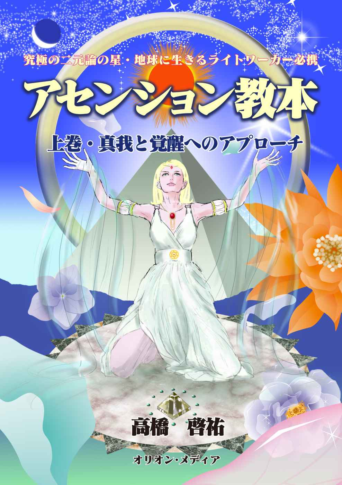

| アセンション教本 上巻：真我と覚醒へのアプローチ | |
| 高橋 啓祐 | |
| Orion Medium (2013) | |

--- 真我と覚醒へのアプローチ ---
高橋 啓祐
オリオン・メディア
この本は、二〇〇八年から二〇一三年にかけて、著者のブログで掲載したコンテンツを、一部加筆修正して、電子書籍にしたものです。
当時、二〇〇八年から二〇〇九にかけて、相当の数の「普通の人たち」に覚醒が起こりました。スピリチュアルという言葉が一般に広まったのもこの時期でした。
この覚醒を求める「普通の人たち」のことを、精神世界では、「ライトワーカー」と呼んでいます。自分の人生のテーマとして、「意識の進化」あるいは「悟り」を求めている人たちの事です。
私もそのような「普通の人たち」の一人です。この普通の人たちにとって、一大事件となるのが、「アセンション」でした。
アセンションという物語は、だいたい以下のようなストーリーです。
二〇一二年を中心とした、前後50 年くらいの集中した期間に、宇宙から地球に対して、例えて言うと人類の意識の進化を促す成長ホルモンのようなものが分泌され、その進化のエネルギーが追い風となって、地球の波動が一気に上昇し、人類の意識が、蛹が蝶になるかのように脱皮して、その結果、愛に溢れる世界ができ、めでたく地球人類が宇宙文明への仲間入りをする事ができる、というような物語です。
アセンションという言葉が一人歩きしているので、陰謀論の文脈でアセンションは作り話であったという方もいますが、ライトワーカーたちにとってのアセンションという言葉は、まずは個人的な、内的な体験に関して語られるものです。
私自身の実体験に基づいて考えると、今この時も、個人の意識の進化を促す、地球の波動の上昇が続いている事は間違いないと思います。
この時期に起きる事を一言で言うと、「自己」の中に「真我」（=愛）が浸透してくるということです。
これは、過去の地球では、ごく少数の優れた精神的な資質を持った人だけが体験できた事です。しかし、地球の波動が上昇した結果、少し事情が変わってきました。自分が出した想念の反作用がすぐに現象化するようになったからです。
これは、自分が出したネガティブな想念の反作用を受けないようにするためには、想念のコントロールを嫌でもしなくてはならないという事を意味します。完璧な想念のコントロールは、エゴにはできないことです。ということは、誰もがエゴを手放さなければならない時代になっているということです。しかし、現象化するのが早くなっているので、昔に比べたら、目に見えない世界の法則を理解するためのハードルが低くなっている、とも言えるかもしれません。
言い換えると、意識の覚醒は、自然に起きる事ではなく、主体的な、自覚的な訓練の結果として起こる、という事になります。このため、ライトワーカーたちにとっては、想念のコントロールが、日々のトレーニングの中心課題となります。
そして、優れたスピリチュアルの教師からは、自分の想念のコントロールのための具体的な方法を学ぶ事ができます。
わたしたちの日々の実践課題はそこにあります。私の場合は、一人のスピリチュアル学徒として、自分が共感できる何人かの優れたスピリチュアル教師達の、珠玉の言葉を手がかりにしながら、日々の生活を過ごしてきました。
はじめは、教師の言葉を、概念としては把握していても、実感として理解してはいません。しかし、やがてそれを、理解できる日が来ます。そうすると、どうしてもその理解を文書に整理して、残したくなります。
本書の文章はすべてそのようにして書かれたものです。実体験に基づく実感がある事だけを文章とし、枝葉末節の知識ではなくて、本質的な、重要なテーマについて、わかりやすく解説するように心がけました。
アセンションは、まだ続いています。それは一人一人の内的世界に起きる個人的な事件だからです。
二〇〇九年からは、新しい時代に向けての「創造」の原理の理解と実践がライトワーカーたちのテーマとなっています。
そして、二〇一三年から二〇一四年をターニングポイントとして、地球でのアセンションイベントの後半戦である、社会改革が始まっていくと思われます。
後半戦を戦うために必要な知識は、二〇一二年までに、既にすべて与えられています。そして「創造」の原理に関する知識は、アセンション後半戦のこれからこそが、本格的に必要になるものだと思います。
なお、この本の記事の中には、霊的世界観や宇宙の構造に関する知識を扱ったものがあります。そもそもこれらについては、ふつうの人間が追体験できない情報ですが、私自身の世界観の土台となる物語ですので、神話としてご紹介しています。
本書には、同じ道を歩んでおられるライトワーカーの皆様にとって、知識の整理や、新しい気づきにつながるような、価値ある情報がたくさん含まれています。
ぜひご愛読いただきたくお願いいたします。
高橋 啓祐
ニール・ドナルド・ウォルシュの『神が望むこと』という本の中に、以下のような記述があります。
人々は、神が人間の命よりももっと重視する何かがあると想像し、神の名の下に人殺しをしたりするのだが、しかし、実際には、「神はなにも望んでいない」のであると。そして、この真実を知ったときに、宗教戦争をしている神学者の前提は崩れ去るのだというのです。
伝統宗教と、スピリチュアル系の「神」の理解の最大の違いはここにあります。したがって、おそらく、いま、スピリチュアルといわれている思潮の核心は、この「神は何も望んでいない」ということだと思います。
「神は何も望んでいない」のはなぜかというと、人間がなにか念いを出し、それがすでに実現していることを実感するとき、それが善いことであろうが、悪いことであろうが、神（宇宙）はそれをそのまま実現してくれるからです。このことが、「神は何も望んでいない」ということを推測させるのです。
『ある気持を自分の内側で創り出すと、それに応じたことを外部的な出来事としても創造できる。これは、気持、感情がエネルギーの場を動かすからで、そのエネルギーが生命／人生だからである。心の中で何かを描き、それがすでに実現されたものとみなしてそれにともなう気持、感情を自らに体験させれば、実際にそれを創造できるというのは、人類がいままで聞いた中で最大の情報―神は何も望んでいないという情報を―証拠だてている。』
(神が望むこと 176-177p)
「神は何も望んでいない」ということは、言い換えると、人間は、「自分が創造主」のように振る舞う事ができる、ということです。人間は、自分が経験したい人生を創造する完璧な自由をもっているのであり、それが、神の愛によって保証されているのです。
これはチャネラーのアマーリエさんの著者『ガイアの祈り』（徳間書店刊）の中で、オーム意識が語っていることとも共通しています。人間がその創造の力を正しく使いこなすことができたら、そういう人が一定の人数出て来たら、世の中は変わるのでしょう。（注：オームとは、インドの諸宗教で神聖視される聖音であるが、私たちの住む宇宙自身の名前であるとも言われている。）
このように、精神世界では、しばしば、「自分が創造主」という言葉が語られます。しかしその意味を正しく理解することは容易ではないと思います。
「神は何も望んでいない」、すなわち「自分が好きなように創造できる」ということは、本当にだれでもが追体験できることなのでしょうか。
これは私の仮説なのですが、たしかにこれは真理なのですが、それは、意識のレベルが、二極性を離れて、神の視点に近づいている意識を持っている人にしてはじめて実感をもって「使いこなすことができる」真理なのではないかと思います。
つまり、左の図のように、現時点で、受容性の問題をクリアして、専ら創造がテーマとなっている人に向けて語られた言葉であると思うのです。
ウォルシュの言葉で考えさせられたのは、「ある気持を自分の内側で創り出し、それに応じたことを外部的な出来事として創造する」ということを「実践できるようになる具体的方法」として、以下のような説明がされている部分です。
『自分の外側に何かを見る時、決して自分と切り離さず、それと溶け合いなさい。それとひとつになりなさい。あなたはすべてとひとつなのだから。分離という考えを自分にさせないこと。あの男を見たら、「あれは酔っているわたしだ」と言いなさい。映画スターを見たら、「あれは有名なわたしだ」と言いなさい。草を見たら、「あれは草であるわたしだ」と言いなさい。どこにも自分自身を見続けること。見て「あれはわたしだ」と言いなさい。毎日そうしていると、三ヶ月もたてばまったく違った生命／人生の姿が見えてくるよ。』
（神が望むこと 194~195p）
ここでは、私たちの意識が、なにもしないでそのまま創造の次元に飛躍することができるわけではない。そうではなくて、まずは「神の視点」に近づく必要があるよ、そういうトレーニングをしなさい、と言われているように読めます。
ここで、「神の視点」に近づくというのは、自己認識の中に、分離の意識が一切ない状態を作る、ということを意味します。そのとき、自己は、神性―ひとつである全体であり、完全であって、何も欠けてはいないし、何も必要ではないもの―と同じになります。この認識から、自然に「神は何も望んではいない」という結論がでてくるのですが、そのときに、人間の内なる創造の力が自ずから目覚めるのではないか、と思うのです。
ウォルシュを通して神が語っているのは、「ワンネス」に近づいた人間の自己認識の仕方なのかもしれません。
これと似たことは、「ホロニックユニバース」という見方に関して、かつて史上最強のヒーラーと言われた、津留晃一さんも語っていました。津留さんは、「他人はいない」という言い方をしています。
津留さんの理論は、こうです―この宇宙は、ホロニックな構造になっている。全体の中に一部があり、一部の中に全体がある。それは即ち人間の中に全宇宙があるということを意味する。私たちが外に見ている世界は、実は自分の内側を映し出して見ているのだ。したがって、自分が認識できる世界に登場するすべては、自分なのだ。
思うに、確かに、全てが自分なのだ、と考えると、分離意識がなくなるようにも思いますが、もうすこし正確に言うと、すべてが自分なのだという認識ができるようになるには、「自分の意識」の側が、ある条件を満たしていることが必要なのではないか、と思うのです。というのは、「自分自身」の意識のレベルには、段階があると思うからです。
仮に、人間の意識の発展段階を、三つに分けてみたいと思います。
まず、日々の念いと行いを、専らエゴが主導している「自我レベル」、つぎに、宗教的、道徳的な価値観を持って、内なるエゴを客観視して、コントロールできるようになった段階である「自己レベル」、さらに、念いと行いが、肉体をもってこの世に生活している自己を作り出した、「高次元の自己」と一つになった段階である「統合意識レベル」の三段階です。
それぞれの意識の段階では、段階に応じた、克服すべきテーマがあると思うのです。
自我レベルでは、まずは、社会的なしがらみや、役割、ロールを自分だと思っている意識を放下する必要があります。
また、肉体や、感情や、想念や、思考すらも、「自分のものではない」、三次元世界での経験をするために、神様から預かっているものにすぎない、という理解をする必要があります。これは、「肉体は神が宿る宮である」というような認識です。
まず、自我レベルの意識では、このように、肉体我に伴う「自分」という感覚を捨てる方向での意識のトレーニングを続ける必要があります。
もし、肉体我としての自分という意識のままで、外に見えるものが自分であると考えてしまったらどうでしょう。はたしてその人は分離意識から離れることができるのでしょうか。
自己認識が、肉体や、感情や、想念や、思考から自由になると、自己レベルになります。
自己レベルでは、エネルギーとしての自己認識ができるようになります。想念でも思考でもない、愛のエネルギーが自分の本質であると実感できるようになります。
このレベルでは、ハートのチャクラを開くことが必要です。従って、教えとしては、受容性や赦しなどの、愛の教えがこのレベルの意識に対応するわけです。
このレベルの意識の特徴は寛容さであって、したがって分離意識はかなりなくなってきます。現在、地球のアセンションにあたって、大多数の人がターゲットとしてクリアすべきレベルは、これだと思います。
その先に、「創造」の世界があります。このレベルの意識は、すでに愛と慈悲の世界と波長が同通しており、分離意識がなくなった段階です。自分の肉体とも、直接的な環境とも、つながっています。人類の集合意識ともつながっています。
この状態の人は、津留さんが言うように、何も考えることなく「起きてくる」ことをただ味わうことができるようになるのでしょう。人類は、この段階に至って、自由に創造することがその課題となります。
この段階に至って初めて、「神はなにも望んではいない」ので、自分自身が望む創造行為をすることができる、という命題があてはまるようになります。しかし、その段階での自分とは、すでに「自我レベル」の自分ではありません。ワンネスに戻った後の自分です。
集合意識と繋がった自分自身が、望むことをするようになるのです。それはすなわち、人類の使命のピースを担うということであり、このレベルの人の場合は、そのビジョンは、それぞれの人の「内側から落ちてくる」ことになるのです。
宇宙の始まりとしての無―それは同時にあらゆる可能性を含む有ですが―を考えてみます。もともと宇宙には、形あるものはなにもありませんでした。あったのは創造主の思考だけ。
形あるものがなければ、空間はなく、空間がなければ動きはなく、動きが無ければ物事の因果関係もないわけで、従って、時間もないのです。正確には、時間・空間の範疇を使って認識する主体も客体もないのです。言い換えると、時間・空間は、人間としての存在に伴う認識の形式にすぎません。それは、もともと本来ないものなのです。あるのは、ただ、今という瞬間、偏在する唯一の意識だけでした。それは、時間と空間が始まった今でも、同じです。
従って、いま自分が見ている三次元世界の現象はすべて時間・空間の形式に投影された映像のようなものであって、本来存在していないものなのです。私たちが認識の習慣を変えるためには、この宇宙の始まりの時点に立ち返ることが必要です。
そして、存在するのが唯一の意識であるならば、「私」という意識がたくさんあるように見えている事自体も、幻想であるということになります。おそらく、「私」といっているものは、三次元世界で連続して何億年も活動してきたなかで作られた記憶のことなのです。経験が違うから、個性が違うのです。あるいは、個性が違うから経験が違ってきたのかも知れません。もし記憶の部分を除外したならば、残るのは、究極の「観察者」の部分であって、それぞれの生を「観察している」意識にまで立ち帰ると、それはおそらく一つなのです。それは、私たちが同じ一つの宇宙の秩序の中で存在しているという自然な観察からの必然的な帰結である推論です。
わたしの中にはもともとこうした発想がありましたので、過去世で神秘主義の宗教を学んでいたのだと思います。
津留晃一さんの発想も同じで、津留さん自身が過去世でいろいろな宗教を通して学んできたものを、今世、精神世界で宇宙人からのチャネリングメッセージを学び、純化していったのだと推測します。
ある海外のチャネラーは、日本人には「感情のバランスをとる方法を発信する使命がある」といっていますが、津留さんは、おそらく、感情のバランスをとる方法を、わかりやすく説明してくれた、最初の日本人の一人でした。
津留さんの仕事を一言で言うと、分離意識からの解放、つまり、無極の視点(創造主の視点)を提示することによって、二極性の世界の中に落ち込んだ私たちの意識を、自ら分離意識から解放する方法を教えてくれた、ということでした。
津留さんは、アセンションとは、人類が神に回帰する事であり、それは、全能の神のような超能力を目指すことではなくて、二極に分離した意識が、無極になる事である、と考えました。そして、「二極性のゲームから降りる」ための方法を教えたのです。その方法は、次の図の各要素に照らして考えるとわかりやすいと思います。
この図の構造を少し説明します。まず、宇宙の意識が進化するためには、宇宙が肉体としての物質世界を持つことが、必要なことでした。これは、人間の魂が、物質世界に肉体を持ち、霊的な世界と転生輪廻を繰り返している事と同じです。宇宙の意識にとっても、意識の進化のためには、物質世界を通しての経験が必要なのです。
ところで、魂が宿る三次元の物質は、その世界に存在するためには、時間と空間が特定されるため、世界の全ての要素が、最小の活動単位にまで分かれてしまいます。このため、物質の世界は、必然的に、「分離」を前提とした世界になります。
ところが、役割上仮に分離した個々の意識が、社会を作り、秩序を守って存在するようになると、他人と自分を比較して、判断するための物差しを持つようになります。やがて、私たちの意識の中に、「価値判断をする自動ロボット」が出来上がります。
このロボットの働きにより、他人と自分を比較する優劣の感覚が作られ、自他を分ける思いが出来上がります。そして、自分が掴んだ価値観からみて、よりよい結果を指向して、努力を始めます。
いまや、右の図のようなシンプルなプロセスで「二極性のゲーム」が行われています。なにか事が起こると、「悪いことだ」と判断し、ネガティヴな感情を起動させ、それを「良い」方向に持っていこうとして、一生懸命「外の世界」に働きかけます。
実はこれはすべて「世界が客観的なものだ」という、意識の誤解に基づいた活動です。このような、「外の世界が存在する」「外の世界が原因である」という感覚に基づいた活動を、「二極性のゲーム」と呼びます。この意識の誤解を解くための方法を教えてくれたのが、津留さんでした。
まず、「自他を分ける」という意識に対しては、「他人はいない」「宇宙には一人しかいない」ことを理解するというアプローチで意識変革をしていきました。
つぎに、潜在意識から折に触れて湧き出るネガティブな感情の扱いについては、「葛藤の感情エネルギーを避けることなく、味わい尽くす」というアプローチで、想念の浄化をしました。
また、自分の中にできた、無意識の価値判断の思考回路に対しては、想念観察を実践して、「観察者となる」「価値観を手放す」「咎めない、否定しない」というアプローチで意識変革をしていきました。
そして、二極性を体験する世界から抜け出すために、「鏡としての世界認識をする」「自分は創造者、完全で無限であるとの信念を持つ」「ハイアーセルフに委ねる」生活をする、というアプローチで意識改革をしていきました。
これらの、津留さんが提案した基本的な発想については、のちほど詳しく説明していこうと思います。
二極性のゲームから降りる事は、すなわち、日常の意識を「外の世界が原因である」という認識から「内の世界が原因である」という理解に逆転させる事を意味します。
「内の世界が原因である」ということは、わかりやすく言えば、自分の目に映る事象、外の世界に起きる出来事は、すべて自分の内側にある「波動」の投影である、という理解をする事です。例えば殺人事件のニュースにしても、その情報を見聞きすること自体が、自分の体験する世界の中に登場してくる以上、その人はその事件を自分に対する天の声として、自分の内なる心の持ち方を反省しなければならないことを意味します。
人類の意識から、殺人の思いが一人もなくなるまでは、だれかがそれを見せる役割を引き受けてくれることになります。しかしながら、自分の世界は自分の中で完結しており、自己の外側に映し出される体験映像を修正するには、ただ、自分が、自分自身の内側に働きかけるしかないのです。逆に、これは自分自身が、自分の目に映る世界の全ての原因であり、全責任を負っている、という理解にもつながります。
自分が創造主である、というスピリチュアル系の考え方は、過去の地球の宗教では、異端思想とされていたと思います。しかし、直感的に、より事実に近い考え方であると感じられ、なによりも、普通の人間の意識で追体験できることが、この思想の魅力です。
伝統的な宗教と秘教的な方法論はこれまでは相容れなかったのですが、地球の神々が、過去の宗教で人格神が神を名乗っていたのは方便であったことを認めるようになると、両者は実は同じものであったことがわかってきました。
ここで「地球の神々」というのは、過去の地球の文明で人類を指導してきた、幾多の高級神霊のことを念頭において言っています。
話は少し脱線しますが、江原啓之さんがテレビに登場して以来、イギリスの神霊主義に端を発した、スピチュアリズムの思想が、日本でも、広く知られるようになりました。このイギリスの神霊主義は、地球の高級霊界の神々による、アセンションの時代の到来を見据えた、霊的ルネッサンス活動の先駆となる運動でした。
そして実は、一九七〇年代以降、この日本で、本格的な霊界通信--- ただ単に、霊的世界がある、ということを伝えるだけの通信ではなく、人生の指針としての、高度な思想が降ろされる霊界通信---が行われていました。そして数多くの、高級霊界からの「霊言」が記録されました。
その中には、過去の文明では決して明かされることがなかった霊的真実が、きわめて明快に説かれていたものがあったのですが、残念ながら、その後その情報を管理する団体が変容し、現在では、内容が書き換えられてしまいました。
この、日本で行われた霊界通信において、高級霊から降ろされたメッセージは、「霊言」と呼ばれています。そこで、本書でも、以下「霊言」という言葉を使いたいと思います。
また、日本で降りた霊言の内容は、神近い高級人霊が語るものであり、事実としてきわめて高度な、思想的な内容を含む事から、「神の理（ことわり）」がそのまま言葉として流れ出たものとして、「神理」ないし「正法神理」というネーミングがされました。
そして、この「神理」は、きわめて波動の荒い物質世界を持つ、地球という特殊な環境で、長年地球人類を指導してきた神々により開発され、熟成し完成されたものであり、「地球という星で作られた教え」という意味で、「地球系神理」という呼び方がされています。
「地球系神理」で語られる情報は、スピリチュアル系の情報と共通するところもありますが、必ずしも同じではありません。この点、著者は両方の教えを学んでいますが、両者の関係については、以下のように考えています。
地球の霊界構造や、転生輪廻の仕組みや、人生の目的と使命など、人間の意識で追体験できない主題に関しては、地球系の神理の情報を信頼すべきだと思います。他方、意識の進化のための方法論については、宇宙系のスピリチュアルの情報が非常に参考になると思っています。
地球系神理の話が長くなりましたが、話を元に戻しますと、地球の神々は、過去に自分が興した宗教では、その時代の人々の理解度に合わせて、自分を神であると名乗っていました。しかし、この日本における霊界通信において、地球系神理として、はじめて「人格神が神を名乗っていたのは方便であった」ことを明かしたのでした。
そして、この地球系神理の基本教義の一つとして、「人間は神の子である」ということが語られています。ここで、地球の神々が、「人間は神の子である」というときに、はずせない重要な要素として、神と同じ「創造力」があることに目覚めるべきこと、および、神は「愛」のエネルギーであり、人間はその神の愛に同調して、自分を神に投げ出すべき事が語られているのです。
言い換えると、他者を無限に赦し、生かし、育む、創造主の神の愛のエネルギーと同調できる、精妙な意識の波動を持ちながら、実際に自分の個性を輝かせて、神の理念そのものとなって、三次元世界に自由自在に形ある表現をしてみせること。これが、すなわち人間が「神の子」として生きることに他なりません。
しかし、これはよく考えると、スピリチュアル系で言う、「創造主としての自分を選択する」ということと同じなのではないでしょうか。
地球系神理を説いた方は、仏教系の方でしたので、地球系神理には、法理論としてのカラーが強く出ていると思います。しかし、説明の仕方はどうあれ、中核となるメッセージを考えると、地球の神々は、結局、スピリチュアル系の考え方と共通する内容を語っているのではないでしょうか。
もっとも、この点については、「創造主に帰る」とは「ただ存在の至福を味わうこと」であるとする考え方もあります。このような考え方をすれば、「創造主としての自分を選択する」ということは、「この地上に何かを作り上げる」というような、ダイナミックな活動を必要とするものではなくなります。
しかし、高級霊からの霊言は、どれも「この地球を愛あふれる星に変えたい」という熱意に満ち満ちています。ということは、少なくとも、現在、この地球の高級霊界に存在している、高級霊達は、「ただ存在の至福を味わうこと」だけを目標にはしていないように考えられるのです。
たしかに、神は、人間としての経験をしたくて、人間の世界を創造し、人間の肉体の中に入ってみたと考えるならば、神にとっては、感情に翻弄され、泣き笑いし、時には恐怖を感じる世界こそが、「そうでない自分」を本当に知るために必要なプロセスであった。とすれば、神自身に回帰するステージになったならば、もう目的は達したのだから、さっさと至福の世界に帰ったほうがいいのではないか。そういう考え方もあるとは思います。宇宙にはそういう星もあるのかもしれません。
しかし、少なくとも、地球神たちは、人類の「創造」の使命について、もっとダイナミックなイメージを持っているようです。地球神からのメッセージは、人間は神と共に新しい次元を共同創造するステージに入ったのだという、別の考え方に基づいていることを示しています。
二〇〇八年に、チャネラーのアマーリエさんに、太陽神霊から、次のような新しい神話が降ろされました。
それは、要約すると、「神とは愛のエネルギーであり、その神の体がオーム宇宙であり、銀河系が宇宙の心臓であり、人類が宇宙を巡る神の血液の細胞の一つ一つなのであるが、私たちは宇宙全体に活力を与えるために、新たな愛の形を創造し、新たな愛のエネルギーを宇宙全体に発信する位置にいるのだ」というものです。
「創造主に帰る」ということの意味について、神々はどう考えているのか、この神話から忖度できると思います。
「人間が創造主に帰る事の目的」を考えることは、「神が人間になってみたことの目的」を考える事です。
神は、既に悟った存在であり、もう進化の必要はないのか。それとも、根源神そのものも、絶え間なく魂の進化を続け、宇宙自体も日々進化しているのか。もしそうであるなら、人間が、宇宙と共同で、宇宙の未来を創造することもまた、宇宙の計画なのではないか、そんな事も考えられると思います。
この部分が、地球系神理と、スピリチュアル系で大きな発想の違いがある論点の一つだと思います。次の章でご紹介する、スピリチュアル・マスターのレナードさんは、「私たちは、もともと源と一つなので、『進化する』ということはありません。」と言っていますが、この考え方は、スピリチュアル系ではポピュラーな考え方です。津留さんもこのように語っています。
結論から言うと、筆者は、「創造主に帰る」とは「ただ存在の至福を味わうこと」であるという考え方は、すでに悟った方にとっては真理ではあるものの、いまだ自我レベルにいる意識の方々の場合は、本質的には、エゴを納得させるための「一転語」ととらえるべきで、この言葉を「人生に目的はない」という、目的論的な判断に至る思考に使うべきではない、と考えています。そこに「価値判断のものさし」が紛れ込むことになるからです。
そもそも、神が完全な静寂であるという考えは、ある人が、「親なる神」の存在をどのように「感じるか」という主観的事実の問題であって、一般化、概念化して思考の材料に使う(使える)ようなものではないと思います。
例えば、自我レベルの意識は、「神」＝「自己」を、なにか形ある存在として認識しているでしょう。自己レベルの意識になると、「神」＝「自己」を、「愛のエネルギー」という、形なきものとして認識するようになるでしょう。統合意識レベルになれば、「神」＝「自己」を、「愛の摂理」として認識することが自然になるでしょう。さらに、ほんとうに神に近い波動レベルに到達した人間の意識があったとしたら、おそらく「神」＝「自己」を、完全な愛、喜び、至福の感覚として認識するようになるのかもしれません。
しかし、大多数の地球人にとっては、自我レベルの意識から脱却する事が喫緊の課題なのではないでしょうか。神の境地を自己の境地として味わう資格があるのは、少なくとも、統合意識を構築し、愛と慈悲の境地に生きている人であって、その方達だって、実際のところ、そう簡単に人霊としての修業から卒業することはできないのではないかと筆者などは思うのですが、どうでしょうか。
アセンションの意義を考える時、これまで覚醒したくてもできなかった少数の求道者たちが聖者の悟りを体験することができるようになる希有なチャンスである事は否定できないと思います。しかし、この機会が、その他大勢の魂達の覚醒に対する無関心を正当化するものであってはならないと思います。地球には、様々のレベルの魂達がいます。それが地球という星の個性なのです。自我レベルから自己レベルへの意識の進化という意味でのアセンション、自己レベルから統合意識レベルへの意識の進化という意味でのアセンション、という概念もありうると思います。そして、おそらく、大多数の地球人にとってのアセンションの課題は、自我レベルから、自己レベル、ないし、統合意識レベルへの意識の進化なのです。だからこそ、地球の神々は、「地球系神理」のメッセージを通して、いま、神が愛である事や、宗教や民族の違いを越えて愛のもとに繋がろうという呼びかけをしているのだと思います。
本書は、「地球系神理」自体をテーマとして扱ってはいませんが、霊界の構造や転生輪廻などの霊的知識が十分にある読者の方への「統合意識」へのアプローチをご紹介するものです。統合意識を構築する事は、決して魔術的なことではないというのが、筆者の主張です。
アセンションの目的については、下巻で詳しく扱いますが、地球神は、太陽系の使命について、さらに以下のように語っています。
地球という星の建国の理念は、善も悪も、陰も陽も、右も左も、上も下も、すべての要素を自らの意識の中に取り込みながら、なおかつ自らの自由意思を使って、愛のエネルギーを創造し、恒星のように、宇宙の隅々にまで届けよう、ということだった。これは、本来恒星意識がテーマとすることであるが、それを、三次元の固い物質世界の中に閉じ込められた意識が行うという、とんでもない挑戦をいま地球人類はしているところである。
地球人類にとっては、物質世界は、くびきではない。三次元の世界だから、とか、精妙な波動の世界だから、とか、そんなことは関係ない。それが、私たちが、作りたい、新しい地球人の姿なのである。そのための、アセンションなのである------ 。
思うに、精妙な波動の世界に住む魂達が「神に回帰する」というプロセスであるなら、それはおそらく、過去にも、どこかのだれかである宇宙人がやって来たことなのです。私たちも、シリウスやプレアデスのメッセージなどによって、地球人が到達すべき意識に関して学ばせてもらいましたが、おそらく、私たちは、同じ事を再生産するために、長年地球にいて転生を重ねて来た訳ではないのです。しかも、私たちの多くは、過去に、もともと、すでに高度に進化した惑星に住んでいたというのです。
物質世界の惑星でありながら、無限の愛の活力を宇宙に放射するような星になること、それは、個々の人間に引き直していうと、宇宙と一つになって、矛盾対立する環境の中で、なお愛の表現のための創造をすることだと思います。老荘思想のように「ただ存在の至福を味わうこと」という境地があることは疑いませんが、おそらく間違いなく、それだけでは足りないのです。
「地球を愛の星に変えてゆく」ということは、やはり、私たちが、多様な環境の中で、愛の原理原則に基づいて、新たな表現をするための自由な「創造」の力を発揮していくという意味で「神の子」に変わってゆくことだと思うのです。そしてそれは、現象面で見れば、普通の人間が、ただ普通の人間として生きてゆく以上のことではないはずです。
しかし、これは、人間存在のイメージが、旧い時代の地球とは、変わっていく事を意味します。これまでは、無慈悲な運命に翻弄されるほかなかった弱い人間が、自分自身を、いかなる障害もものともせずに、愛のエネルギーを自由自在に表現する、という意味での神の子として、新しい創造主として、自らを作り直していく、という事を意味します。そのときに、人間には、二つの新しい知識が必要になります。
一つは、新しい地球人の意識の容れ物となる、新たな神話が提供されること。「人間とは何なのか。世界とは何なのか、人生とは何なのか。神のお心は何処にあるのか。私たちは何のためにいまここにいるのか。」という、人間の根本的な存在に関する疑問に答え、三次元世界で活動するための方向性を与えてくれる、しっかりとしたコンテクストが与えられることが必要だと思います。
これは、人間の意識では追体験できない事実を扱うものなので、普通の人間の能力を超えた、特殊能力者が担当すべき仕事です。
もう一つは、実際にどうすれば、地球人の意識の波動を、神の「愛のエネルギー」に近づけていけるかという、意識の進化のための知恵が提供されることです。こちらのほうは、人間の意識で追体験できる世界であり、霊能力を封印された、普通の人間でも担当できる仕事になります。
精神世界で明らかにされている文献の多くは、後者であり、津留さんの仕事は、こちらのほうに位置づけられると思います。こちらの側面は、地球に集っている多様な魂の個性に応じて、多様な教えが説かれることが必要だと思います。
徳間書店の五次元文庫から出版された、レムリア・ルネッサンスの『ガイア黎明』は、前者の代表的な書物の一つだと思います。宇宙的な視野から、地球人として生きることの意味を理解させてくれるものであり、すべての精神世界人の必読図書だと思います。
日本の精神世界人は、いち早く、世界に先駆けて、究極の二元論の世界を楽しみながら、愛と創造の次元で自由自在に光り輝く存在となることを目指すべきです。
私たちの意識の波動を、神の「愛のエネルギー」に近づけていくにはどうしたらいいのでしょうか。そのためには、まずは、意識の進化の方法論について、正統派のスピリチュアルのマスターが持っている、発想の枠組みから学ぶ事が近道だと思います。
以下は、「神の使者」の著者である、ゲイリー・R ・レナードさんの考え方です。この内容は、レナードさんが来日した際、著者がセミナーに参加して、ポイントを書き取ったものです。エゴによる人生体験を、聖霊による人生体験に変えていくための、基本概念と、トレーニング方法が、とてもわかりやすく整理されています。
レナードさんは、「エゴから真我への上昇（アセンション）」のために、本質的に必要な重要ポイントを、的確に提示しています。
これから、「エゴを解除する」体験に至るための方法をご紹介しますが、そもそも、「エゴ」とは、何でしょうか。
「エゴ」とは、「源から離れているという概念」のことです。源とは、神とかタオ(道)とか呼ばれる、私たちの存在の源のことです。
私たちは、もともと源と一つなので、「進化する」ということはありません。源は、もともと完全だからです。神は愛であり、喜びであり、完全な静寂です。もし不完全なものが、完全を目指すというのであれば、それは神ではありません。
エゴは、分離という幻想に意識が落ち込んでいる状態であり、源との一体感を取り戻すことによって、この状態を解除できます。そのための方法は、三つに集約できます。
源、つまり、神は、こういうものだと教えたり理解したりすることはできず、ただ個人的な体験を通して知るしかありません。
そのためには、これから説明する思考形態を自分の習慣にするように、日々トレーニングをすることが大切です。
「聖霊の体験」に至るためには、三つの方法、道筋があります。
その方法とは、「聖霊に委ねる」こと、次に、「源と一つになる」こと、そして、「赦し」です。
この三つの内的な実践を通して、「エゴの体験」から「聖霊の体験」に至ることができます。
なお、レナードさんがいう「聖霊」とは、津留さんの言葉では、「ハイアーセルフ」に相当するものと思われます。
【聖霊に委ねる 】
まず、聖霊についてですが、「聖霊に委ねる」という思考の習慣を作ることで、「自分一人が」考えて何かをする、という考えをしなくなるようになります。生活の全てを聖霊に仕切ってもらうことにより、「すべては聖霊に導かれて行った」という考え方をするようになると、だんだん分離という幻想が解除されていきます。
そのための瞑想の言葉は、以下のようなものです。
『この聖なる瞬間をあなたに捧げます。あなたが全てを仕切ってください。あなたに従います。あなたの方向性が、私に平和をもたらすことを、信じます』
毎朝、一日を始める前に、この言葉を唱えることで、10 秒で、聖霊に仕切ってもらえます。聖霊に委ねることで、何か事が起きると、それに応じて、必要な叡智が必要なときに出てくるようになります。
【源と一つになる 】
次に、源と一つになる祈りを、紹介します。祈りと言っても、言葉によって行うものではなく、真の祈りの形は、沈黙の内に行うものです。言葉を使わず、神と一つになる体験をすることが重要です。それは、「そこにあるすべてのものと一つになる体験」であり、また「自分のソースと一つになる体験」です。それが出来ていれば、祈れているということです。
神とは、この時空の宇宙を超えた存在です。しかし、私たちは神を知っており、神に対して懐かしい思いを感じています。自分の無意識の中には空間があり、その部分は全てを覚えています。「奇跡のコース」には、
「奇跡とはただの記憶である」という言葉もあります。神が「私」の中で目を覚ますことが、光明とか悟りとか言われることです。私たちは、全ての人のために思い出すのです。
ここで言う祈りとは、具体的には、次のようなビジュアライゼーションをして、「ソースとの一体感を体感する」ことです。
まず白い光をイメージします。それが自分のほうに向かってきます。その光が自分を癒してくれます。とてもいい気持です。自分の握っているもの、持っているものを全て手放す感覚を感じます。そして、全てを手放してみると、実は全てを持っていたことに気がつく、そのような感覚を感じます。すべてが与えられており、全てが満たされています。私は、いつもソースと一緒に居たのです。
この瞑想は、三、四分で出来ます。
【赦しを実践する】
次に「赦し」に至るための、いくつかの考え方をご紹介します。
「エゴの体験を聖霊の体験に変える」ためには、「赦し」の実践が大切です。しかし、「奇跡のコース」でいう赦しとは、一般的な赦しとは違い、「結果を見るのではなく原因を見てゆく赦し」です。
（原因を見ること）
私たちが誰か、あるいは何かに対して怒るとき、外にある理由のせいで（例えば大統領の政策のために自分の収入が減る、とか）怒ると思っていますが、実は、真の理由は、そうではなく、分離の概念にあります。
もし、自分がこの肉体ではなく、すべての全体であったらどうでしょうか？
私たちが源と一つになるというトレーニングによって、自分は、分離した肉体ではなく、時空を超越した無限の存在である思考が身に付きます。自分が全体であるという理解が身に付いたら、この怒りは出なくなります。
あるいは、「罪悪感のないマインドは苦しまない」と言われます。罪悪感がなければ、内的な痛みや苦しみはなくなります。苦しみがなくなれば、問題は消滅します。これは、仏陀が説いたことと同じです。
聖霊は、彼らが実在しないことを教えに来ています。
実在するものは、ただ源のみ、一者のみです。聖霊も実在しなければ、私たちも実在しません。私たちの外に見える世界があるというのは、私たちの幻想です。私たちは、自分の内側を、世界に投影しているだけです。自分の肉体も、自分の内側の投影です。自分の脳も、自分の内側の投影です。自分の外に見える別の肉体も、自分の内側の投影です。「自分」と「彼」が実在していて、「彼」が「自分」に何かをしたというのは、幻想です。この理解が、「原因を見る」ということです。
「彼らが何かをした」から、それを許すのではありません。「彼らは何もしていないから許す」のです。さらに言えば、「我々が彼らにそうさせている」から、すべての責任は、彼らではなく、自分のほうにあるのです。この思考形態では、自分は「被害者」にはなりません。被害者にはパワーはありませんが、「自分が原因」であると考えると、全てのパワーを手に入れることになります。
（無意識の理解 ）
無意識を理解することによって、赦すという方法もあります。人間を仕切っているのは、表層意識ではありません。マインドのほとんどは、意識の水面下にあります。無意識の海が、あなたを動かしています。それが、いろいろな狂気や、悲惨な出来事を生み出しています。様々な暴力や、言葉による混乱、衝動や、中毒などは、全ては無意識から起きてきます。表層意識を使って、無意識を癒すことができます。そのためには、思考形態を訓練することが必要です。「奇跡のコース」には、「訓練されていないマインドは何も達成できない」と書かれています。
（他人に対する見方）
私たちは、他者を見るのと同じ方法で自分を見ます。これがマインドの法則です。「他人に対して持つ思考は、必ず自分に返る」のです。従って、あなたが、誰かに対してある思いを持ったときには、それに気がついて、つぎのように振りかえってみることができます。
「この考え方は、自分に対する考え方である。」
「私は、自分について、こう考えている。」
他人を許すためには、相手を思い浮かべて、次のような言葉を、三回繰り返します。
『あなたは、スピリット（魂）である。あなたは完全で無垢である。すべては赦され、解放されています』
そして、思いの中で、相手を聖霊の下へ手放します。
他人を見る考え方が、自分の見る考え方になるので、「他人とは神以外の何者でもない」と考える習慣を身につけるようにしましょう。「奇跡とは習慣である」と言われています。「他人とは神以外の何者でもない」と考えることは、すなわち「自分とは神以外の何者でもない」と考えることです。
自分が神で他人が神ではない、という思考はマインドの法則から成り立ちません。
「この世は幻想である」と考えるだけでは足りません。この世が幻想なら、自分も幻想であり、空虚であり、意味がないと考えるようになってしまいます。自分は神の一部であるという考え方も違っています。一部ではなくて、全てです。源と一つである自分以外に誰かが居る訳ではないのです。人間は、この世界の秩序を超えた存在であり、あらゆる限界を超えた存在です。時空に入り切らないくらい大きな存在、それが人間なのです。他人をそう考えられれば、自分のことも、そう考えられるようになります。
（エゴが解除されるとどうなるか）
エゴの解除とは、エゴを解除すると同時に、それに取って代わる思考形態を入れることです。そのためには、すべてを原因というところから見て、赦すこと。救済とは、全てのエゴを解除することであり、エゴが解除されると、「本当のあなた」だけが残ります。エゴがなくなれば、あとは成功するしかありません。
（聖霊の導きはどのような形で来るか）
聖霊は、必ず、「愛と赦し」の地点から話をします。これに対して、エゴには、いろいろな感情のレンジがあります。攻撃性から、不信、疑惑などです。個人のマインドに入ってくる思考が、聖霊なのか、エゴなのかは、この観点から見分ける事が出来ます。旧約聖書の中にも、残念ながら、聖霊の言葉とそうでない言葉が混じっています。攻撃的な言葉が、聖霊から出てくることはありません。慣れてくると見分けられるようになります。私は、いまや、自分自身にいろいろ教える牧師になっています。あなたも、毎日練習してください。練習すれば、やがてマスターになれます。
（罪悪感の投影について）
無意識の罪悪感は、自分に投影することもあるし、他人に投影することもあります。しかし、自分に投影するのも、他人に投影するのも同じことです。約25 ％の人は、自分の罪悪感を自分に向けています。そして多くの人は他の人に向けています。
従って、まず、自分を赦すこと、休ませてあげることが必要です。マインドの中で、自分自身の姿をイメージし、自分に向かって次のように言ってみましょう。
『自分は、不死のスピリット（魂）だ。この肉体はイメージ（幻想）にすぎない。私の本質とは関係ない。』
そして、あなたのイメージを手放して、聖霊の下に返してあげましょう。
あなたが創り出すイメージは、神が望む「本当のあなた」を壊すことは決して出来ません。
「奇跡のコース」には、「人生には、何十億もの選択肢が有るように見える。しかし、それは全て幻想である。実際は、人生には、二つのことしかない、そして、そのうち一つしか現実ではない」という言葉が有ります。私たちは、神を選んでもいいし、それ以外を選んでもいいのですが、実際は、神のみが現実です。イエスは、自分が殺されようとしている時も、「主よ、彼らは自分が何をしようとしているかわかっていないのです」といって、相手を赦しました。イエスは、決して妥協はしませんでした。我々もそうあるべきです。
大事な者は、自分自身です。あなたが全てを赦したならば、たとえ殺されたとしても、あなたは誰からも傷つけられません。そのためには、恐れがない事が大事です。
罪悪感が全くなくなったならば、その結果として、恐れがなくなります。恐れがなくなると、人生はただ喜びとなります。神の資質の一つは、喜びです。幸せな夢になります。「奇跡のコース」は、ただ「愛」を教える教えであって、苦しみを教える教えではありません。
ただ「赦し」をしていくと、「愛」に至るのです。エゴを解除すればするほど、「愛」を体験します。あなたは、外に愛を求めなくてもいいのです。なぜなら、「愛」があなたの本質だからです。「愛」は、自然に起きることなのです。
（神との一体感について）
意識が大事といわれることがあるけれども、意識も結局のところ分離です。マインドが創造者でなく認識者となっているからです。時空は幻想です。我々は、一つであって、分離していません。お互いと一つながりであって、それは体験することも出来ます。我々が別々の肉体を持っているという考えも幻想です。男女がセックスを通して一体感を得ようとするのは、神との体験を再現しようとしているのです。
神との一体感は、個人的な体験です。神との一体感を体験すると、この世のすべての物事がどうでも良くなります。それは常にオーガズムを感じているようなものだからです。しかし、人間は、どうしても、地上の関係性から、逃れることはできません。例えば、親兄弟の人間関係から逃れることはできません。そのときに、憎むために人間関係を使うのか、赦すために使うのか、という選択をすることになります。
人間は、選択をするパワーを持っています。それは、世界をどのように見るかを選択することです。どのように世界を見るかは、あなた次第です。
（他人に対する思い）
赦しのためには、あなたが他人をどう見ているかに気付いていることが必要です。「自分の他人に対する態度」は、あなたが「自分のことをどう思っているか」ということを反映しています。他人に優しい人は、自分の中の無垢な部分とつながっています。
もしも私が、他人を好きならば、自分のことも好きなのです。イエスは、すべての人に対して優しい人でした。自分のことも好きでしたが、「他人への態度が自分にかえってくること」を知っていたからです。
*****
奇跡のコースは読むことさえ難しいし、「神の使者」も何が一番重要なことなのか把握することが難しいのですが、要は、①聖霊にお任せする②神と一つになる③赦すという三つが実践課題である、ということがわかります。
また、特に③の赦しについては、「自分が世界の原因という見方をする」「無意識の罪悪感を癒す」「他人の見方を変える」などの発想が重要であるということです。
あとは、とにかく毎日実践でトレーニングを続けることだと思います。
「宇宙ブラボー」というサイトで、TUTというサイトから、「宇宙からのメッセージ」が毎日配信されていることを知り、二年くらい前から毎日楽しみに読んでいるのですが、数日前にこんなメッセージが来ました。
Life is not what you see, but what you've projected. It's not what you've felt, but what you've decided. It's not what you've experienced, but how you've remembered it. It's not what you've forged, but what you've allowed. And it's not who's appeared, but who you've summoned. And this should serve you well, beloved, until you find, what you already have.
『人生は、あなたが見るものではなく、あなたが映すものだ。それはあなたが何を感じたかではなく、何を決めたかだ。それはあなたが何を経験したかではなく、どのように記憶したかだ。それはあなたが案出したものではなく、許可したものだ。それは、誰が登場したかではなく、あなたが誰を招集したかだ。そしてこのしくみは、最愛のあなたが、すでに自分が持っているものを発見するまで、あなたにとても役に立つに違いない。』
これは、スピリチュアルな「原因から見る」世界観をとてもよく説明していると思います。
同じようなことを、津留さんも言っています。津留さんは、ある日、見えない世界の人からこういわれました。「あなたは無限である」と。津留さんは、「自分が無限である」という仮説を受け入れ、こう推論しました。わたしが無限であるならば、私は神である。私が神ならば、私がすべての創造者である。私が全てを創造したならば、全ては私が望むとおりに起きている。ならば、いま起こっていることを味わい尽くし、楽しもう。自分がいま見ていることは、自分が書いたシナリオである。人々は、わたしが招集し、書いたシナリオとおりに演じてくれていると考えることにしよう、と。
人間は、これまで、舞台の上で演じている俳優の視点だけで考えていました。与えられたシナリオを忠実に演じること以外のこと、例えば、舞台から降りるとか、筋書きを変えてしまうとかといった、それ以外の可能性は意図的に見ないようにしていたのでした。それは、視野が舞台の上に限定されていたからなのですが、その演劇をプロデュースし、監督し、シナリオを書き、舞台美術を作り、俳優を集め、演出し、作り上げている存在の視点に気がついたならば、そこで演じることの意味自体が変わらざるを得なくなります。もともと何でもありなのであって、それをわざわざ制限を作ることによって物語を成り立たせていたということがわかってしまったら、従来のリアリティは消失し、別のリアリティが生まれてくるはずです。
この「すべては自分が原因である」という見方は、「外に原因があると思い、問題解決のために外に働きかける」という、エゴの働きの対局にある思考パターンです。わたしたちは普通、生きるためには、あるいはよりよい生活をするためには、「自分が何かをしなければならない」と考えるのですが、津留さんは、その思考は幻想だと考えていました。そもそも、こういう思考が起きること自体、「自分が正しい」という根本の思いを握っているからであって、「自分が正しい」ということは、自分がその立場を選択しているというだけのことであると考えました。
「何かをしなければならない」という意識を手放したならば、なにも起こらないかというとそんなことは無くて、人生の体験は「起きてくる」というのです。エゴが立ち去ったら、「純粋動機」が現れてきます。「自分が正しい」という意識を手放したら、判断は起こらず、従って思考も起こらず、ただ観察者になります。それは、プロデューサー兼、監督兼、シナリオライター兼、舞台美術担当兼、演出家でもある俳優が、演劇の全体を理解しながら、舞台の上での自分の演技の出来を観察しながら、そこに輝いて存在している自分を味わっているようなものです。
このプロデューサー兼、監督兼、シナリオライター兼、舞台美術担当兼、演出家のことを、ハイアーセルフと呼びます。これが、原因の世界にいる本当の自分であって、宇宙の全てとつながって、宇宙の全ての叡智を使うことができるような、全知全能の存在だそうです。人間が「神の子」であるという言葉はこの関係を指しています。深く長い意識的な呼吸を数分間行うことで、ハイアーセルフとつながることができます。
さて、わたしたちは、覚醒の途上にいます。これまでも、百% 間違いなく「自分が望んだ通りのことが起きている」のですが、「地球人」を演じる生活が長かったため、表面意識との食い違いが残っています。自分の表面意識が望まない失敗や問題が起きれば、葛藤が起こります。ただそれは、表面意識で望まなくても、潜在意識では望んでいたことなのです。
ところで、ここからは私の個人的な話となるのですが、私は長年ある外資系の企業につとめています。入社した当時は、「会社をやめて牧師になりたい」などと考えていたものですが、与えられた場所で仕事を続けるうちに、過去の哲学者の内向的な瞑想体質とは全く違う個性を身につけました。おそらく帰天後はもといた哲学者村には帰らないだろうと思います。地球の転生輪廻のしくみはよくできていると思います。
直近の過去世で、わたしはトマス・ア・ケンピスの「キリストにならいて」など、孤独と清貧を勧める当時の「修道士マニュアル」を読みふけり、その価値観を勉強していたようです。それにより、自分も裁き、同時に他者をも裁く傾向性が身に付きました。
その結果として、「豊かな自分を排斥する」傾向性や、「他人や異性から愛される自分を排斥する」傾向性を根深く持ち続けました。「豊かな自分を排斥する」というのは、程度はともかくとして、お金というものを愛さず、豊かさを受け入れるスペースを意識のなかに取らないという選択をしているということです。「他人や異性から愛される自分を排斥する」というのは、他人や異性や世界を百% 本当には信頼していない、という事だと思います。他者を愛し受け入れるスペースを取らないという選択しているということです。
これは私の場合の例ですが、覚醒とは、潜在意識の中のこうした神の子の本来のあり方とちがった選択をし続け、神様の愛に抵抗する意識を捨て、神の前に全面無条件降伏をすることだと思います。私は神の子でした、ということを認め、神の子としての恩恵を受け入れ、神の子として、愛の子として生きることを決めることだと思います。
つまり、シナリオを書いた者の視点に立ち返るときに、これまでの地球人としての演目に使って来た小道具のうち、いらなくなったものは全部捨ててしまうということです。
愛とは、人を生かし、赦し、分ち与えることであると言われますが、それは、言葉を変えれば、他者や、世界と一つになり、受け入れる思いのことでもあると思います。世界のすべてを自分自身として体験できるようになることが、愛へと回帰することなのだと思います。
津留さんによれば、「人類の集合意識が選択した以上、ゲームから降りることを決めさえすれば覚醒する」ということになります。しかし、「ゲームから降りる」ということは、愛によって世界を創っている神に無条件降伏すること、神への回帰、愛への回帰を意味するのではないかと思うのです。そう考えたほうがいいと思います。これまでの地球人のゲームは終わっても、神の子のゲームは、まだまだ続くのですから。
津留さんのよく知られたフレーズで、「他人はいない」という言葉があります。宇宙には自分一人しかいない、という意味です。
津留さんの一番根本的な発想は、「もともと一つだった神の視点、創造主の立場に立ったら世界はどう見えるか」ということの探求でした。そこで、「自分はもともと神である」という命題を出発点として、あらゆる仮説を推論していったと考えられます。
「他人はいない」というのも、津留さんの仮説であって、その意味で、一つの立場の主張です。
「自分はもともと神である」という汎神論的な考え方は、スピリチュアルでは一般的です。大昔に宇宙神霊がスパークし、自分のまわりに無数の分霊を創り出した。そのなかで、ある者は、宇宙の体の中の臓器を構成する銀河となり、ある者は恒星となり、あるいは惑星となり、またあるものは人霊になることを選択した。
そして、宇宙自体が波動を下げて、エネルギーとなり、三次元の物質にまで下降した。それが、いきつくところまでいったので、今度は反転し、いまはまた物質からエネルギーに、さらに神の意識に戻るという、進化の途上にある、というようなストーリーです。
これは、宇宙意識が、一度物質をまとい、その過程で経験を積むことによって、もとの存在に戻ったときに、その意識が以前よりも進化している、という宇宙観です。
この理解を前提に、「他人はいない」ということの意味を考えてみると、まず、もともと一人だった神（宇宙）が、分光して、無数の個性体になった。そのときは、まだ、それぞれの意識体は、自分と別れた存在がいてもそれは皆自分であると感じていたでしょう。それが、長い間、自分に与えられた個人の領域の中で経験を重ねるにつれて、ほかの存在は、自分であるとともに他人でもある、という感覚に変わっていったでしょう。それが、最後には、自分が物質であるという感覚のもとで、他人という認識に変わっていったのでしょう。いま、宇宙の進化のサイクルが反転しているならば、その他者を見る「他人」という感覚は、「他人であるとともに自分でもある」という感覚に変わらねばならず、さらには、他者は自分である、という感覚に戻らなければならないと思われます。
しかし、そういう感覚にたどりついたならば、そもそも「他人はいない」という思考は要らなくなります。
「他人がいない」という左脳的な命題で自分の感覚に活を入れなければいけない状況とはどういうときであるかというと、自分の内側に起きているネガティブな感情の原因が「他人=外側の存在」にあると、「エゴが判断した時」なのです。
つまり、津留さんが「他人はいない」という言葉を使う時、「他人がいない」という事が言いたいのではなくて、「あなたの問題は、あなたの内側の問題なのです。その原因は外側にはありません。あの人のせいではないのです。」ということを気付かせたいのです。
意識を外に向けないで、自分の内側の原因に意識を向けましょう、という提案なのです。
津留さんのお勧めの態度は、まず、「相手が考えていることは相手の世界では百% 正しい」ということを受け入れる、ということです。相手が見ている世界は世界の事実のすべてではなく、しかもさまざまな価値判断によってその情報はゆがめられています。その事情は自分のほうも同じです。そして、他者によって自分が害されることはありません。他者の行為によって害されるのは、自分が害されることを受け入れるときだけです。
もう一つの態度は、相手がどうのということではなく、「どういう自分でいたいか」ということにだけ意識を合わせ、そういう自分でいるようにつとめる、ということです。津留さんによれば、それは、どんなときでも「愛深い自分でいること」です。
自分の内側から、ネガティブな感情が出てくる場合、原因はほぼ二つに集約されます。ひとつは、過去の体験のエネルギーが巻き戻されている場合。この場合は、そのときの感情を思い出し、あらためてその感情の記憶のエネルギーの中に入り、全身全霊でその感情を味わい尽くすことで、数分で不快な感覚が消えて、気分がすっきりします。もう一つは、自分の中に、価値観を握っているとき、物事に対して否定的な感情が湧いてきます。否定したり、裁いたりした場合は、自分はどんな価値観を握っているのかを発見して、その思いを書き換えることにより、エゴの思考が流れなくなります。
さて、さきほど、宇宙が自分自身を進化させるサイクルについて説明しましたが、津留さんのやろうとしていたことは、この進化のサイクルを、人類の意識の持ち方に関する、触媒的な思想をもって、意識的に加速させようというアプローチであったのではないかと思われます。
つまり、津留さん自身は、「人間はもともと悟った存在なのだから、進化向上しようとしなくていい」という言い方をしていましたが、それは結果的に意識の進化を加速するためであったという逆説です。
ところで、さきほど、もともと一つであったものが、一旦分離して、統合することで、以前の宇宙とは違う宇宙に進化している、という物語があるということを説明しましたが、その進化における一番の眼目は何であるかというと、宇宙全体が「愛を知ること」ではないかと思われるのです。愛という切り口で、同じように、宇宙の進化のプロセスをモデル化してみると、まず、出発点における神は、愛のエネルギーであり、すべてを生かしめている、生命の親なる存在でした。その神が無数に分光したとき、すべての天使の魂は、悪を知りませんでした。それが、自と他を分ける世界の中で、一旦個人が砂粒のような存在になってみることで、愛が無いとはどういうことか、愛があるとはどういうことか、を理解することが出来るようになったと思われるのです。地球人は、今、愛を選択し、神の愛のエネルギーにつながって、自由意思によって、愛の表現を創造するという、新しい人類に進化しつつあるのです。
それによって、宇宙が、愛のエネルギーである自分自身を真に知るという意味で、進化を遂げたということになるのではないでしょうか。その成果物が、地球における新たな愛の形です。それは、要するに「異質なものを愛する」ということに尽きます。これが地球の挑戦であり、地球がさまざまの多様性を含む究極の二元性の星であるが故に、地球が愛の星になることが、宇宙的な意義があることになるのではないでしょうか。
こういう大局的な理解と、津留さんの「他人はいない」という考え方は、矛盾しないどころか、全く方向性を同じくしているように思うのです。
先程述べた、津留さんのお勧めの考え方は、「自分しかいない、自分さえ良ければいい」という、エゴの発想の真逆です。それは実際には他者の存在と、自由意思を百% 尊重する考え方です。異質なものというのは、他者を排斥する物差しが自分の中にあるときにだけ存在します。津留さんの考えは、すべてのものを否定しない、自分の中の物差しをすべて捨て去る、ということですから、これ以上の寛容さはありません。つまり、今の時代に本当に必要な考え方を、残してくれた、ということです。
津留さんは、すべての物差しを捨てたときに、思考がなくなり、エゴの欲がなくなる、しかし、エゴの欲がなくなっても、本来の欲求が出てくる、といいます。その欲求がどういうものかについては、ひとそれぞれ違うので、具体的にはあまり語られていませんが、ハイアーセルフは高次元の存在ですから、当然、神の愛の表現としての欲求であるはずだと思います。
要は、エゴの欲がなくなったら、自分の魂の器に応じた、欲求が出るようになるはずだと思います。一説によると、魂の次元が高くなればなるほど、人間的な欲求が希薄になるが、人霊の最高度の救世主界の魂でも、人々を救いたいという、救世の欲求は残っているそうです。エゴの欲が消えたときに、どういう欲求がでてくるかによって、案外自分の魂の霊格などもわかってしまうのかもしれません。
津留さんは、ハイアーセルフとの共同作業による創造についても語っていました。人間がするべきことは、顕在意識で、希望するゴールを明確に宣言することであり、方法はすべてハイアーセルフにおまかせすれば、すべて実現する、と言っていました。しかしあくまでそれは、エゴの欲求が消えていることが前提であり、それは、物差しを捨てるという作業の積み重ねの結果として起こることだと思います。
津留さんの言葉は逆説に満ちていますが、津留さんが一番好きな言葉が愛だったのですから、その思想は地球を愛の星にするための方法論だったはずです。ぜひ、愛の文脈からその真意を解読するように心がけていきたいものだと思います。
幾何学の問題では、なかなか解決の糸口がわからないのに、たった一本の補助線を発見するだけで、一気に問題が解けてしまうことがあります。津留さんがよりどころとするいろいろな「仮説」は、ちょうど幾何学の補助線のような働きをしてくれます。
「神理」は、論理的な説明のつく次元、マインドの世界の次元で、多次元存在である人間のありかたを説明したものなので、いくら知識をふやしても、実際にマインドの外に出るところまではなかなか至りません。
この点、スピリチュアルの発想には、マインドの楔を解き放ってくれる発想、「神理」の体系の外に視点を飛躍させてくれるたくさんのヒントが用意されていると思います。
たとえば、ハイアーセルフ、という概念もその一つだと思います。これは、「人生の舵取り」を、どうやってしていくのか、という方法についての、仮説モデルを説明したものです。
ハイアーセルフに似た概念で、「守護霊」や「指導霊」という言葉がありますが、それとは違います。ハイアーセルフというのは、おそらく地球系神理では、「真我」に相当する概念だと思います。「真我」とは、心の奥の中核部分にある、神そのものの、「うそのつけない自分」のことです。地球系神理でも、「反省」のよりどころとなる「内なるものさし」として、最も重要な概念の一つになっていると思います。
津留さんによれば、ハイアーセルフは、より高次な自分自身であり、それは一人ではなくて、神に至るまでの何段もの次元階層があるということです。このことは、創造行為が、下の次元に対してのみ行われるものであることを考えると納得がいきます。
そして、津留さんは、三次元の世界の中で、物質の肉体に宿り、何億年もかけて、自我意識を作り上げて来た、このエゴというものが、実は宇宙の「成果物」であった、という理解をしています。私たちの人生をほんとうに生きているのは、エゴに同一化して、エゴにフォーカスした私たちではない、実は、エゴを超えた、高次元にある私たち、高次元の我、ハイアーセルフこそが、人生の主体なのである、ということなのです。これは証明不可能なことなので、仮説にすぎません。従って、この物語を自分の世界観に取り込むかどうか、潜在意識にプログラミングするか否かは、ただ信じるかどうか、という問題になります。
ハイアーセルフについて、津留さんが具体的にどういうイメージを持っていたかについては、わかりませんが、一方で、「地球には一人しかいない」と言われていたことが、手がかりになると思います。
これが事実であると言っているのではありませんが、次元上昇した地球には、一つの集合意識があり、それは、地球の全ての構成員、人間だけではなく、動物も、植物も、山も、空気も、川も、全ての構成要素が一つになったものであり、自分の一つ上のハイアーセルフは、その構成要素の、ピースの一つなのではないでしょうか。
なお、津留さんは、同時に、「宇宙には一人しかいない」とも言っています。自分の二次元、あるいは三次元上のハイアーセルフは、同様に、宇宙全体を構成する要素の、ピースの一つになっているのかも知れません。
私たちが、三次元世界にいながら、意識の覚醒を果たしたときに、エゴの思考は消え、この一つの地球を構成する細胞の一つになり、すべてとつながります。そのとき、私たちの心は、分かち合い、生かしあい、赦し合いが自然にできる段階に進化しているべきです。それを統合意識と呼ぶのではないでしょうか。
さて、津留さんによれば、ハイアーセルフと地上の自己との関係は、非常に実践的なものであるように思われます。アバターという３Ｄの映画が話題になったことがありますが、構造としてはまさに同じことが行われているというわけです。そして、地球では、このアバターのゲームは、「魂の進化のための学び」の目的で行われています。そもそも、この宇宙が、無目的に作られたことは考えにくいことです。
具体的には、「自分自身のカルマの修正」と、「本来の使命の遂行」のために、ゲームが行われていると思われます。津留さんは、私たちの意識の覚醒により、この世界に生きていることの意味が「結果を出すため」から「純粋に体験するため」へ変化しなければならないと言っていますが、これは、「自分はアバターである」と自覚することで、起こってくる必然的な意識の変化です。
これは、もはや、エゴが「自分が何かをしなければならない」という「結果指向」の思考を起こさなくなる、「ハイアーセルフにすべて任せて、流れのままに、ありのままに進もう」という感覚に変わる、と言っているのです。決して、この世界が、進化しなくてもいいとか、自分の魂が進化する必要は無い、と言っているのではないのです。
それは、津留さん自身が、「自分は地球を救うゲームを楽しんでいる」とか、「思い通りにしたいという欲を手放したときしか波立たない心は実現しない」などと、救世の使命や悟りの境地といった、地球系の神理に沿った発言をしていることからも、その本意が伺えると思うのです。
津留さんは、おそらく、「宗教の教義では人類は救われないよ」と言いたかったのです。津留さん自身は、過去世に「先生」になってしまったことのカルマの修正と、二極から無極へあらゆる二元性の「統合」のために生きる、という二つの使命を持って、下生されたと思われます。
さて、津留さんによれば、私たちは、自分で人生の舵取りをしていると考えていますが、実は、車のハンドルを切っているのは、すべてハイアーセルフであるのです。たまたま、エゴが右にハンドルを切ろうと思ったときに、ハイアーセルフも右に切ったので、自分が運転していると錯覚しているにすぎないというわけです。
自分の人生を創造している主体は、エゴ(小我)ではなくて、ハイアーセルフ(大我)である。エゴ（小我）には、事を成す力は、全くない。これが、津留さんの大きな悟りでした。
エゴは、「なんとか思い通りにしたい」と考えます。そして、思い通りにならないと、葛藤します。津留さんも会社の一部上場の寸前での倒産と言う事件を通して、この「思い通りにならない」という問題にぶつかりました。しかし、三次元的に見れば不遇の状況にもかかわらず、目に見えない世界のガイドから、「あなたは無限である」というメッセージを受け、考え抜いた結果、次のような推論を通して、ハイアーセルフとの融合を果たしたのでした。
自分は無限である、ならば自分は神である、ならばすべては自分が創造したのである、ならば自分はまったく思い通りの体験をしたのである、ならば、自分が体験したかったのは、これだったのだ。
「すべては思い通りになっている」という、このような発想の転換は、自分が「アバター」であるという構造を思考の補助線として引いてみると、できるようになります。
思うに、「思い通りにならない」というのは、ハイアーセルフからのシグナルです。ハイアーセルフが、本当に辛い体験を津留さんにさせたかったのかどうかは、わかりません。津留さん自身の条件が違えば、もしかすると、そこまでしなくても済んだのかもしれません。しかし、津留さんが、このような観の転換を悟りとして得て、教えとして説くことは、使命として自ら携えてきたものなのですから、その悟りを得ることは絶対に必要なことだったわけです。従って、結果として、倒産という事件を通して、津留さんは考え抜き、ハイアーセルフと交流して人生の舵取りをするという境地を発見した訳です。この悟りから、人類がこれからどれだけ大きな福音を得るかははかりしれないと思います。
上記の理解から推論できることは、もしいま私たちが問題をかかえ、葛藤を抱えているのであれば、「なんとか思い通りにしたい」と思って、ハイアーセルフに頼んでも無駄である、ということです。その葛藤は、「学ばなければならないことがある」という事だからです。
解決する道は、やはり、津留さんのいうように、二つに分かれます。一つは、思い通りにするために、努力して、達成すること。もう一つは、「思い通りにしたい」というエゴの欲を手放すこと。津留さんは、決して前者を否定していません。この三次元世界で経験し残したことがある人は、経験しつくすために、おのずと二極性のゲームを続けることになる、ということです。
津留さんは、ハイアーセルフとの交流についても解説していました。ハイアーセルフは、自分自身です。ちょうど、自分の目では自分が見えないように、自分の舌では自分の舌の味がわからないように、ハイアーセルフと、直接コミュニケーションすることは出来ないそうです。
したがって、「わたしはあなたのハイアーセルフです」などと心の中で語りかけてくる存在がいたら、それは間違いだということになります。おそらくエゴの声でしょう。
ハイアーセルフとつながる一番いい方法は、自分の呼吸に意識を向けることだそうです。呼吸はハイアーセルフが司っているということなので、呼吸に意識を向けて、深く長い呼吸を続けることは、すなわちハイアーセルフに意識を向けることになります。
高次元世界には、空間がありませんので、意識を向けたときに、その対象とつながっているということです。その状態で、投げかけた疑問に対しては、必ず、やがて環境からのメッセージとして、答えが返ってきます。
これは、「祈り」とも似ていますが、すこし違います。「祈り」とは、主に言葉を使い、顕在意識を媒体として、高次元存在に向けて電話をかける行為に相当します。どの相手に電話がつながるかは、送信者側の想念の波動のレベル次第、ということがあります。地球系神理における「祈り」は、釈迦の反省法である八正道でいうと「正念」に相当すると言われています。祈りとは、自己実現の方法として、高級霊との意思疎通をはかる方法ですが、言葉や形式を媒介とせずとも、生き方そのものが祈りである時代が来るとも言われます。
津留さんが言うハイアーセルフとの交流は、自己実現という目的を持った「祈り」ではなく、むしろ、地球系神理を日本で最初に明らかにした宗教家である、高橋信次先生が言う「正定」にあたると思われます。
高橋信次先生が説いた「八正道」の反省では、「うそのつけない自分」をよりどころにして、いろいろな観点から心の曇りや塵を払って、高次元の霊天上界の意識の波動に同調します。その状態で禅定し、その波動を、三次元の肉体にまで降ろして、浸透させることが、「正定」であると言われていました。これが、高橋先生の言う「神との対話」なのです。
地球系神理における「正定」の骨子が、反省を通して「真我」の波動を取り戻すことであるとともに、その波動を三次元の肉体を持って「実感すること」であるとすると、津留さんと同じことを反対の方向から説明したものだと理解することもできると思います。
どちらにしても三次元世界では、「体験すること、この肉体で実感すること」が大事なのです。地球では、ネガティブな波動は、なにもしなくてもそこら中に転がっています。でも、それを、「味わう」ためには、意識が一旦そこから出て、観察する位置に収まらなければなりません。そのためには、想念観察をすること。これは、八正道で言う、「正見」「正思」と同じものだと思われます。そして、ハイアーセルフと相互浸透することです。これが津留さんの一つのアプローチ。
一方、地球系の神理では、真我をよりどころとした反省という作業を通して、最終的には、自分の中の高次元の波動を発見することを求めています。高次元の波動を、三次元に居ながらにして、全身全霊で味わう。これが地球系神理の禅定のアプローチであるなら、やはりこれはハイアーセルフと相互浸透することと同じであると思います。
こうしてみると、地球系神理の方法論と、スピリチュアルの方法論は、結局同じところを目指していると言えなくもないと思うのです。地球系神理に学んでいる方にも、スピリチュアルの視点を補助線とすることにより、新たな発見があるのではないかと思います。
現代社会はストレスに満ちています。しかし、それは世の中が実際そうだということではなく、私たちが、エゴを中心とした生活をしているときに、そう感じる、というだけのことです。私たちの多くは、会社の中で日々長い時間、激務をこなしていますが、宇宙の創造の力を発揮するというよりも、過去の記憶の再生産のために膨大な時間を使っているようです。
エゴのはたらきを中心とした生活は、たとえていうと、いつも程度の軽い「オレオレ詐欺」に引っかかっているようなものです。しかし、無意識的に行われているので、気がつきません。どうもいつも同じパターンの失敗をしてしまうという気がしたら、意識的にそのプロセスを断ち切る努力を始める必要があるのかも知れません。
恐れのエネルギーの連鎖のメカニズムは、この右の絵のようなものです。まず、始まりはどこかの誰かの心の中に起きた、恐怖心、恐れの気持です。外からの信号を、わたしたちは、「今日の○時までに、××をしないと、大変なことになる」というようなメッセージとして受け取ります。
すると、我々の心には、同じく恐れの気持がふつふつと湧いてきます。そこでエゴは、この危機を回避するために、意識を過去の経験に向け始めます。過去の記憶の中から、危機を回避するための方策を探し出し、それをもって現実の世界に向けて対処しようと動きます。
つまり、自分の内側に、そこにあるネガティブエネルギーには何も対処しないで、ただ、外に対して行動しようとします。なにか外に向けて行動することによって、エゴは安心するわけです。
このエゴの思考のプロセスは、ほとんど無意識的に行われますが、宇宙の創造の力はどのような場合でも働いていて、実際には恐れの結果のほうが、行動の反作用として現れてきます。何かがおきてくるのは、私たちが行動として何かをしたからではなく、ただ何かを念ったからなのです。
では、わたしたちは、このような「オレオレ詐欺」の誘惑に、どのようにして反応すればいいのでしょうか？
この絵は、内なる創造のプロセスを描いたものです。
外側から、どこかのだれかの恐れの思いが流れてきます。私たちの潜在意識の底に眠っていた、恐怖のエネルギーが、巻き戻されます。わたしたちは、「不快な気持」になります。この「不快な気持」から、目をそらすとそのエネルギーは、消えません。まずは、「不快な気持」に意識をむけて、全身全霊で味わい尽くす必要があります。そのいやな感情は、もともとの神の意識の中には存在しないもの。数分も経たずに、そのエネルギーは消えていきます。
次に、動機を恐れから愛に変えるように心がけます。これは、自分の内側で、ただ意識の向ける方向を変える、それだけのこと。地上の人間の間を流れる、マイナスのエネルギーの連鎖を、自分のところで止める、断ち切るという決意です。
そのためには、意識を今、ここにおく必要があります。意識を今ここに置くためには、心が波立っていてはできません。そのために、自分の中の価値判断を手放すテクニックが必要になります。
内なる「オレオレ詐欺」は「今日の○時までに、××をしないと、大変なことになる」と言ってきます。舞い上がっているそのエゴさんに、問いかけます。大変なことって、いったいなにが起きるのか。それが起きたらなにがどうなるのか。
エゴの恐れの原因は、自分が掴んでいる何らかの価値判断です。実際には、根源の神の目から見れば、人間にとってのいいことも悪いことも、どちらも同じことです。エゴが掴んでいる価値判断と、逆の価値判断を持って来て、「それでも別にかまわないじゃないか」と、バランスをとってあげます。これにより、エゴは安心し、騒がなくなります。
エゴが働くのは、結局「自分の危機を回避するため」なので、言い換えれば、「自分のこと」だけに意識がフォーカスされているということでもあります。ところが実際は、宇宙は全体であり、「自分」だけという実在はありません。自分という概念は幻想であり、その幻想の中に意識が落ち込んでいる時、愛は存在しえないのです。
わたしたちは、エゴがおとなしくなったときに、初めて「全体がどう変化することがいちばんあるべき神の表現としてふさわしいか」を落ち着いて考えることができます。神理、あるいは法と言われるものは、この思考の過程で使うべき知識なのです。
次に私たちがすべき仕事は、「望ましい結果を思い描く」ということです。望ましい結果を、自分の人生の次のシーンのシナリオとして決める事だけが「私」の仕事です。創造すること自体は、「宇宙」の仕事なのです。創造の部分は、完全なる愛である宇宙を信頼し、ただ全託すれば良いことなのです。
以上は、文章にするととても長いのですが、実際は思いの中で、数秒で終わることだと思います。
神から創造された、私たち人間は、自分の人生を、自分で創造していくことを任されています。といっても決して堅苦しい話ではなく、自分に与えられた立場や、環境の中で、この肉体を乗り船として、人生の最終地点まで、例えて言うならば一種の川下りをしながら、目の前に起きてくるパノラマを楽しみながら、魂の進化のための学習ができるようになっています。私たちは、日々、一瞬一瞬、自分の進路を切替えるための選択に直面しています。日々、一瞬一瞬の選択の積み重ねが、人生を創造することになります。
そして、人間は、他人との関わりなしに存在し得ないのですから、自分の人生は、ただ自分だけの人生ではありません。イエスが二千年前に説いた愛の教えが、その後無数の人々の魂を救ったのであれば、イエスの愛は二千年の間、人々とともに存在し続けたとも言えます。すなわちイエスの人生は、時を超え場所を超えて拡大していったのです。それは、ただ神の愛だけが実在だからです。わたしたちも、より大きな愛を表現しようと意図することによって、イエスと同じように、永遠の今を創造する、大きな生き方が出来るようになるはずです。
私たち地球人は、長いこと宇宙の創造の力を利用すること無く、無意識的に過去の体験の再生産というネガティブスパイラルに陥っていました。でもいまその状況が変わりつつあります。
人生の日々、一瞬一瞬の選択に、意識的に創造の力を使うことが求められています。それは、ただ、ある日車の新しい運転方法を練習し始めることです。新しい運転方法に習熟すると、人生の旅はもっと楽しいものになるに違いありません。
人間の意識の進化の行程には、行きと帰りの二方向があります。行きの行程は、もともと神であった完全な理念存在である人間が、自らの波動を下げていって、物質的な意識にまで下降して、その過程で小さなピースに分割され、自動ロボットとしての肉体とその外縁である市民社会を獲得するに至るまで。帰りの行程は、人間が霊性に目覚め、人間は肉体ではなく、内側ではすべてがつながっていることを自覚し、創造主としての自覚を深め、三次元世界という素材を使い、もともとの神の理念を自由自在に表現することができるようになることです。その時、人間の精神の外縁である社会は、自性的流動性秩序によって、自らなる全体調和が実現されています。
物質化の過程で、人間はエゴを強化する代わりに、自己の肉体、エネルギー体、他者、環境、全宇宙などとの一体感を失います。しかし、一旦物質化の過程で分離した人間は、あるときから進化の方向性を反転させ、再び統合の過程を経て、物質宇宙をまとった神に戻っていきます。このプロセスを通して、もともと一つであり、かつ完全だった理念存在としての宇宙が、一つであり、完全であり、かつ無数の肉体宇宙を持った存在に変貌してゆくのです。
この物語は、人間が追体験できないので、証明不可能な神話です。しかし、問題は、自分がそれを真実らしいと感じるかどうか、ということです。私たちがある物語を納得し、信じたら、私たちの小我(エゴ)はその神話の世界観の中に自分を投げこみ、自動的にそのパラダイムの中で活動を始めるようになります。
ところで神様は、行きの行程では、私たち人間に対して、なじみのある、物質世界のメタファーと左脳的な論理を使い、われわれのエゴに、自己を超えたものの存在を認めさせ、人間が生きている目的と使命を教え、人生の法則を教えてきました。この段階では、方便として霊的な現象を使うこともありました。
行きの行程は、真っ黒なサングラスをかけながら、暗闇の中で小さな懐中電灯の光を頼りに歩くようなもの、あるいは、補助輪をつけてなんとか自転車に乗りながら吊り橋をわたっているようなものです。しかし、出発点に戻るためには、もはや懐中電灯の性能を良くしたり、補助輪の性能を高めたりすることではなく、サングラスをとることや、補助輪を外すことを考える必要があります。帰ることを選んだ人にとっては、もはや地球でのゲームは終わろうとしているのですから。
行きの行程での懐中電灯や補助輪にあたるものが、宗教的な教義でした。たとえば、反省するための物差しとしてお釈迦様が説いた心の三毒をイメージしてください。心の三毒とは、貪 ・瞋 ・癡 のことです。貪とは、むさぼりの心、足ることを知らない欲望・執着のことです。瞋とは、他者に対する激しい怒り思いのことです。癡とは、愚かさ、たとえば、自分の目先の利益のみを追うような、因果の連鎖を考えない行為のことです。
自己顕示欲をぎらぎらさせている状態なども、ここでいう貪にあたるでしょう。だれでも自己顕示欲はある訳ですが、それが度を超して、他者の賞賛を奪うようになると悪であると判断されると言われます。
この三毒自体は、自分の心のありようを把握するためのわかりやすい物差しであると言えます。しかし、この理論から、「およそ自己顕示欲はよくない」という価値判断を自分の心の中にプログラミングしてしまうと、自分の中の自己顕示したいそもそもの原因、内側のエネルギーはそのままにしておいて、この規範を踏み外さないように、行動を自己規制するようになるのは自然のなりゆきです。しかし、そこで止まってしまうならば、それは単に処世術を学んだということと変わりません。それどころか、同じものさしで他人を裁くようになりますので、他人に裁かれる自分という経験を創り出してしまうことにもなります。どこかでこの悪循環を断ち切る必要があります。
究極的に目指すべきは、「そもそも自然に自己顕示しようという気がおきない」心境を獲得することであったはずです。お釈迦様が、自分は北極星の方向をさし示すだけだ、悟りを掴むのは一人一人の仕事だと語られたそうですが、聖人の話を聞く時には、語られた内容(あるべき心境)ではなく、語っている人に意識を向けていないか、とふりかえってみることが必要かも知れません。そして、自分が現在その聖人の語る心境にいないことは、悪いことでも、後ろめたいことでも、恥でもなんでもない、と理解する必要があります。なぜなら、私たちはもともとが悟った神だったのであり、その場所まで戻ろうとする旅を楽しんでいるのだけなのですから。
宗教的な教義は、言葉で表現されているので、おおむね二元的な価値判断の基準として運用される可能性があります。おそらく教え自体に欠陥があるのではなく、人間の側の教えの運用に問題があると思われるのですが、それも止むを得ない部分があります。なぜならば、第一に、言葉の限界があります。言葉の本当の意味は、もともとその意味を悟っている人にしか伝わらないものだからです。第二に、エゴとハイアーセルフの関係に伴う限界です。ハイアーセルフ(大我)はエゴ(小我)のことがわかりますが、エゴはハイアーセルフのことがわかりません。エゴは三次元の表面意識でわかる範囲のことしかわかりません。エゴは、高次元のことは、もともと認識できないのです。もともと認識できないものを、誰かの説明をきいて、わかったと思っているだけなのです。
これに対して、高級霊の霊言には、神の生きたエネルギーの流出があります。預言者は、そのエネルギーを表現するために、宗教の言葉を使っているのです。その言葉の波動を手がかりに、神様の本意を正確に掴もうとすべきです。頭ではなくハートで聞くようにすべきです。琴線に触れる言葉があったならば、それはもともと自分の中にあった理想なのです。神様の言葉は、自分の中の理想を掘り出すためにこそ役に立ちます。
もっとも、宗教的な知識を蓄積するのは、地球系神理で説かれる霊的世界の階層の次元でいうと、六次元神界、あるいは諸天善神と呼ばれる専門家の世界まで、と言われています。その先の、愛の世界、いわゆる菩薩界から以降の心境に至るには、それまで蓄積してきたものを白紙に戻し、実際に愛の実践をすることが活動の中心になるとされています。白紙に戻すとはいっても、六次元神界の修行が終わっているということは、宗教の知識が、魂の深いところで身に付いているということでもあります。
以上をまとめますと、人間になるためには、これまでの宗教が役立った。しかし、神様に回帰していくためには、これまで溜め込んできたよけいなものを手放してみる必要がある、ということです。「屋根の上に登ったら梯子はいらない」と言われます。大空に飛翔するためには、はしごは役にたたないのです。
大空に飛翔するとは、いわば、芋虫がさなぎとなって、蝶に変身するようなものです。地面を這い回っている人間の状態、つまりエゴ(小我)が芋虫。ハイアーセルフ(大我)とつながって、宇宙の促しのままに自由自在に活動している状態が蝶であると言えます。
では、どうすれば屋根の上から大空に飛び立つことができるのでしょうか。これが答えであるとも、これが最善の方法であるとも言えませんが、私は、想念観察とアファーメーションが、「よけいなものを放ち去る」ための方法として、とても役に立つと思いますので、前置きが長くなりましたが、以下に紹介させていただきます。
アファーメーションというのは、精神世界では自己実現系の教えによく出てくる言葉です。「深層自己説得」と訳され、アラジンの魔法のランプの召使い(潜在意識)にオーダーを出すことというような説明がされます。しかし、ここで紹介したいアファーメーションとは、これとはすこし違っていて、心を浄化するための一つのテクニックです。
アファーメーションとは、繰り返して言葉を唱える（想起する）ことによって、自分の潜在意識の中に、想念観察のための手がかりとなるくさびを、目印として打ち込むことです。具体的には、以下のような言葉を、朝晩20 回ずつ、繰り返します。
「私は(もう決して)自分を否定しません。私は(もう決して)他人を否定しません。わたしは(もう決して)あらゆるものを否定しません。」
これを朝、瞑想をしているときなどに、20 回繰り返します。
「私は(もう決して)自分をとがめません。私は(もう決して)他人をとがめません。私は(もう決して)あらゆるものをとがめません。」
これを夜、瞑想をしているときなどに、20 回繰り返します。
この作業は、本質的に、英会話の文例を暗記する作業となんら変わりません。表面意識で、しつこく繰返すことに意味があります。よく、好きな音楽などは、何度も聞いているので、メロディーが自然に頭の中で繰返されるようになりますが、頭の中にこの状態を作ることを狙っています。ですから、難しいことはなにもありません。
この言葉は、自分が思いの中で「エネルギーを止めていないか。裁いていないか。」という状態にあるかどうかを想念観察するための、目印としてのくさびとして効いてきます。「価値判断をしない、裁かない」ということは、言い換えると、ありのままを受け容れる、ということですから、意識の進化にとって、最も重要な概念です。相手を受容することが完全に出来る人は、どのような状態の相手に対してでも、こちら側が被害者にも加害者にもなることなく、自由に愛のエネルギーを送ることができるようになります。すくなくとも、平静な心で愛を与えるための思考・判断ができるようになります。これから取り組むのは、この「心の状態を作る」ための作業です。
反省法としての八正道でいうと、「正思」に相当するものだと思います。
朝晩、この「否定しない・とがめない」のアファーメーションをして、あとはただ普通に日々の生活を送っていると、心の中で自分が無意識に行っている、「自分を否定する価値判断」「他人を否定する価値判断」
「できごとを否定する価値判断」を敏感に感じ取ることができるようになります。
身近な例でご説明しますと、たとえば、駅の改札を出るときに、スイカ (関西ではイコカ) のチャージが不足していることに気がついて、精算機でチャージをしようと思ったとします。ところが、精算機のところまでくると、若い男女の学生が先にいて、男のほうが機械の前で鞄の中の財布をもたもた捜していて、いっこうに精算をするようすがありません。そのとき、どのように感じるでしょうか。
実はこれは私が先日体験したことなのですが、いらいらして、思わず「人が急いでいるのになんだ。すぐに精算できないなら気を利かせてはやく後ろの人に順番を譲ったらどうだ。常識のないやつだな」という思いを出してしまいました。
このとき、瞬間的に、「あ、自分はいまとがめる思いを出したな」ということに気がつきました。最近、毎日アファーメーションしているので、ささいなことに気がつくようになっていたのです。そこで、自分の中のとがめる思いに気付いたので、さらに、「なぜ自分はとがめたのか」という原因に意識を向けるようにしました。とがめる、裁く、ことによって、「いらいら」するというのは、要するに、無意識の思考として、自分が偏ったなんらかの価値判断を掴んでいることのシグナルです。その価値判断に気がついて、その逆の（反対の）価値判断を受け入れる(再プログラミングする)ことで、思考のバランスがとれるようになります。その結果、ネガティブな想念や感情のエネルギーが解消します。その状態が、二極性を超えた意識、ニュートラルな思いであり、全体を見ている存在、つまり神の視座に自分の意識をフォーカスしている、ということになります。
スイカのチャージの話に戻りますと、私は、自分自身が「人に迷惑をかけてはいけない」「人の時間を奪ってはいけない」という価値観を握っているのだろうと思いました。また、ちょうどそのとき、ある人の講演会に行く道すがらであったので、「遅刻してはこまる」という思いもありました。無意識のうちに、その若者は、無駄な時間を使わせることによって、人に迷惑をかけている、という否定的な判断を下した訳です。そして、この判断によって、私は「被害者」としての構えを創造し、「いらいら」の感情、ストレスのエネルギーを宇宙に創造してしまったわけです。
ところが、これはもともと、私の宇宙の中で、私が認識した、主観的現実の解釈に基づいて起こったことです。もし私が、その財布を捜している若者の困った思いを百% テレパシーで感じとれる感覚能力を持っていたら、はたしてこのような思いが出たかどうかはわかりません。そして、そもそも、このような「いらいらする」体験をするのは、わたしの鏡である宇宙が、「きみの中にこういう偏った価値観があるよ」ということを、教えようとしているからなのです。その体験は、私のために特別に宇宙がお膳立てしてくれた、スペシャル・研修メニューであるわけですから、逆にありがたいことだったとも言えるわけです。
私が外に見ているものは、すべて私の内側の宇宙が映し出されているものであり、私が創造したものなのであれば、その「もたもた」している若者を作り出したのも自分であり、それは何かの意味があって、しかも自分にとっては最善の意味があって、彼は私のために「もたもた」した役を演じてくれたはずなのです。
そこで、バランスを取るために、とりあえず、「あ、わたしに気付きを与えてくれたな」と思いなおし、
「べつに彼が精算機の前でもたもたしてもいいではないか」と思考のプログラミングを書き直しました。すると、ほどなく彼はその場を立ち去っていきました。
この経験は、私がアンバランスな価値判断をしたことに気付くことによってとりあえず終わりました。しかしさらに、より根本的なことを考えると、「人に迷惑をかけるべきでない」というような価値判断を、そもそも自分自身がルールとして認めるかどうかは、究極的には、ひとそれぞれの自由であるはずなのです。自分が自分の宇宙の創造主なのですから。「私の宇宙では人に迷惑をかけられることはない」(迷惑をかけられているようにみえても、それはハイアーセルフあるいは神の立場からは実は迷惑ではない)と宣言しても一向にかまわないのです。
無極性の意識を目指すのであれば、つねに目の前の出来事、起きてきたこと、すべてをありのままに、そのまま受け入れることが、選択肢としては最善です。おそらく、神様の目からは、「もたもたしてもよい、てきぱきしてもよい。どちらでもよい」という事実だけがあるのであって、それを迷惑だ、迷惑でない、と判断しているのは、人間の視点での勝手な判断であると考えられるわけです。
ところが、二極性の意識から、「この若者は常識がない」などと考え始めると、いらいらのエネルギーが自分の心の中にたまっていきます。わたしたちは、このような小さなストレスを、知らないうちに毎日たくさん作り続けています。このストレスが、歪んだレンズの働きをして、私たちは神様が作られた宇宙の本当の姿をありのままに見ることが出来なくなっているのだろうと思います。
いろいろと左脳を説得するための理屈を語ってきましたが、この小論で言いたかったことは、一つだけです。屋根の上から飛翔していくためには、自分の想念の中に掴んでいるさまざまの価値観に気がついて、一つ一つ手放していく作業が必要です。そのためには、毎日、ちょっとだけ時間をつかって、「否定しない、とがめない」というアファーメーションをしてみることがとても有効だと思います。
アセンションを成し遂げようとする人の課題は、一言で言えば、創造主としての自覚に至ること。そのためには、日々のあたりまえの生活の中で、自己のハイアーセルフと、インタラクティブな共同作業をしていくことです。
ここでハイアーセルフというのは、「より偉大な自己」という意味ですが、私は根源神の一側面を表現する存在と理解しています。意識が進化すればするほど、人は自己をハイアーセルフに明け渡していくと言われています。
しかし、ハイアーセルフは、あくまで自分であって、他者ではありません。自分の舌は自分の味が感じられないように、あるいは自分の目は自分自身を見ることができないように、ハイアーセルフは自分自身であるので、客体として認識することはできません。つまりハイアーセルフは、瞑想の中で出会うこともないし、姿を見ることも、言葉を聞くこともできません。
もし自分の中にもう一人の自分がいるという感じがするならば、それはハイアーセルフではなくて、エゴである、ということになります。宗教を勉強すると、やがて自分の中に、「ねばならない」と口をはさむもう一人の人格が出てきますが、これは自分の思いの中に分離意識を創り出すわけですから、エゴの活動であるわけです。
愛とか慈悲とかという言葉を、神棚の上に祭り上げて、言葉として語るのが旧人類であったとすれば、そのエネルギーの実体を、あたりまえのこととして、自分の世界に表現できる力を持った存在が、新人類です。そうした方々の内的な世界では、愛の温度が急上昇していくはずです。そうした方たちの経験する主観的な世界は、そうでない人の経験する主観的な世界とは、まったく違うものとなります。
このことが、新しい地球の創造、というテーマに、大きく関わっていると思うのです。
人間が三次元世界の中に生きている限りは、他者とは別の存在という感覚があるので、エゴがまったくなくなることはありません。しかし、完全に物質性の方向に偏った人のエゴの活動率が九〇% だとすれば、完全に霊性のほうに近づいた人のエゴの活動率は一〇% 以下であり、人により、内なるエゴとハイアーセルフの活動の割合は違っています。エゴの導きに従った場合、うまくいくこともあれば、失敗することもあります。
これに対して、ハイアーセルフは信頼できる存在です。というより、ハイアーセルフが本来の自己であり、三次元でのゲームに参加している本人です。今ここに、肉体を持って生活している、私たちは、本人ではなくて、ゲームの駒にすぎません。ハイアーセルフは、駒である私たちが創り出している思考や想念のことはすべて知っています。私たちが気がついていない部分も気がついています。隠された人生の秘密や、修行課題や、必要なものすべてを知っています。
話をわかりやすくするために単純化して言いますと、自分の想念が、価値判断という、二元的な意識に染まれば染まるほど、エゴが活性化し、活動しやすくなります。逆に、自分の想念の中に、価値判断をする思いがなくなればなくなるほど、エゴはおとなしくなり、隠れていたハイアーセルフが姿を現してきます。
意識の覚醒という意味でのアセンションは、個人的な問題です。意識の覚醒とは、単純化していえば、自分の意識のフォーカスを、エゴ=低次の自分に合わせるか、ハイアーセルフ=高次の自分に合わせるか、という選択の問題です。
エゴ=低次の自分にフォーカスするとは、目に見える外側の世界に反応して、外側の世界を、自分の都合に合わせて変えようとする思いを出すことです。この思いのベクトルは、外から内に向かっています。思いの波動の実体は、恐怖心です。彼は、外部の事件を表象し、外に対してどういう手を打つかを思考します。
現在の地球人は、だいたいこのパターンで反応し、想念を創り出しています。近代の哲学者が描写したように、彼は、突然、世界に投げ出され、世界の内側にいる存在になったと確信しています。そして、彼は、徹底して世界から疎外されています。彼は、他者から害される存在であり、被害者として、なにものかに搾取されながら生きています。人間として、彼は無力です。
「こうすべきである」「こうしたほうがよい」「こうでなければならぬ」という、一面的な自己の都合から判断して、他者に働きかける彼の試みはことごとく失敗します。というのは、彼は自分以外の存在に、自分を害する力があると考えているので、その思いのほうが実現してしまうからです。彼は、自分でも気がつかないうちに、自己の力を誰かにあけ渡してしまっているのです。現在の社会システムは、すべて恐怖心に対する事前、事後の管理目的で作られています。
これに対して、ハイアーセルフ=高次の自己にフォーカスするとは、自己の内側の考え方を修正して、外側の世界の表象を変えるという思いのベクトルです。この思いのベクトルは、内から外に向かっています。思いの中身は、少なくとも恐怖心ではありません。自分に力があることを知っているからです。
彼は、外部の事件を表象し、それが自己の内側にある思考が三次元スクリーンへ投影された結果であると考え、自己の内側の思考の間違いを探します。なぜなら、彼は、自分が彼の体験する世界の創造主であると確信しているからです。自分が自分の世界を創り出す創造主であるならば、誰からも害されることはあり得ません。なぜなら、自分の世界には自分しかいないのですから。
私たちは、いわば、シャボン玉のような世界の中にいます。それぞれの人間が、五官に感じられる独自の世界を見ていますが、それは、自己の内面の投影です。映画と違うのは、二次元の平面ではないということ、映るのに時間がかかることもある、というだけです。
外にみえるもの、つまり、シャボン玉の内側に映っている映像は、すべて自分の内側の世界が目に見えるように創られたものです。そうであるならば、外側にみえる事象はすべて自分の内側の問題です。目に見えない想念の世界の問題です。それはすべて自分の内側の思考なのですから、すべての責任は自分しか負うことはできません。もちろん、シャボン玉の外の世界もあります。しかし、それは、誰か別の人の世界の、内側の問題です。
むろん、他者のシャボン玉に接触して、そこにできた幕をとおして、他者の内側に働きかけることもできますが、自分の問題は、自己のシャボン玉の内側に映っているものですので、望ましくない映像を消すには、他者に働きかけても無駄です。
シャボン玉の内側の映像を消す方法は、自己の思考をよく精査し、掴んでいる価値観を手放すことだけです。
ところで、さきほど、自分の世界には自分しかいないといいましたが、この自分とは、シャボン玉の中心で、内側に映る映像を見ている肉体意識のことではありません。シャボン玉の外側には、ハイアーセルフがいます。ハイアーセルフが、自分が体験するすべての映像を管理しています。自分の世界の外にいる自分のほうが本当の自分です。三次元の自分が見ている世界は、この自分が作り出したもの、自分の意志の反映であるという意味で、すべては自分自身を表現していると言えます。
私たちは、まず、こうした三次元のゲームの基本構造を理解し、目に見える世界の中に飲み込まれてしまった自己認識から、意図的に外れる必要があります。
ハイアーセルフと会話はできませんが、瞑想を通して、日々、ハイアーセルフに問いかけ、起きてくる出来事の中にそのメッセージを読み取りながら、思考のブロックを外す作業を続けていくことです。もちろん、日々の生活の中で、自分に与えられた役割をしっかり果たして、シャボン玉の中の愛の温度を上げていくことが大事です。これが、インタラクティブな共同作業ということの意味です。
この作業のことを想念観察といいます。自己の思考のブロックを探るための分析や思考はしますが、何かを判断したり、対策を立案したり、計画を立案したりすることはありません。
想念を観察するのは、自分の中にプログラミングされた価値判断に気がつくためですが、同時に、エゴの働きを抑えるためでもあります。エゴに協力してもらい、自分の想念を観察してもらうことによって、内なるエゴに、ハイアーセルフと重なる位置に収まってもらい、それによりエゴが新たな欲望や目標を創り出すことを妨げようとしているのです。
したがって、想念の観察に際しては、ただ観察者でいることだけを意識し、判断は行いません。努力することは、想念の状態に意識を向けることだけです。観察していることの結果として、おのずから気付きが起こり、考え方の変容が起きるのであって、意識して考えを変えようという努力はしません。
私たちは普通、自分を一人の人間だと思っていますから、すべてについて、自分が「何かをする」、という、自分から外に動くベクトルで物事を認識します。たとえば、自分が死ぬ、死んでどこか別の場所に行く、と考えます。これは、三次元のメタファーを使って、高次元の現象を理解しているわけです。
ところが、発想をまったく変えてみて、まず、世界、つまり私の意識がいる場所には、時間も空間もないのだ、という仮説から出発してみます。時間も空間も、私たちが三次元の現象世界で活動するために、必要な「認識の形式」にすぎません。時間、空間という「認識の形式」が必要だから、神様が人間の感覚をそのように作っただけであって、実際に時間や空間があるわけではないと考えるのです。
時間や空間がない、ということを左脳的に理解する試みは、いろいろありますが、別に難しい理屈を覚えないと理解できない訳ではありません。要は目に見えている世界は、何かの写し絵である、仮想である、ということです。目に見えない世界は、過去でも未来でもない、今ここにある、従って、宇宙の始まった過去も、宇宙が終わる未来も、すべて今ここにあるということになります。私たちの経験は、長いビデオテープのようなもので、実際にはすべての経験がいまあるのだけれども、その一部を順番に上映しながら味わっている、ということになます。
そして、もし空間がないとしたら、それでもなお自他の意識の区別があるとしたら、たった一つの集合意識がここにあることになります。そしておそらく、その集合意識が自分であるという意識の居場所まで登っていったら、自分の身の回りに起こっている出来事の感じ方が、ずいぶんと変わってくるはずなのです。
普通は、自分の死について考えた時、地球には転生輪廻があり、死ぬとその魂の境涯に応じた世界に再生し、そこでしばらく心の垢を落として、ふたたび地上で新たな経験を積む必要がでたら、転生する、という理解をすることになるでしょう。
これに対して、もし、肉体も想念も思想も自分ではない、ただ意識の経験のみが実在する、という考え方を貫いて死んだ人がいたとしたら、どうでしょうか。彼は、常に自分の意識を意識しているのですから、死ぬ瞬間も自分を意識しているはずです。その人は、自分の経験を、「死はない」と表現するのは自然なことだと思います。しかし、両者が経験していることは、同じことであるはずです。
津留さんの哲学の根本は、本来の世界である、この時間も空間もない世界に、実在するのはすべての命が集まった一つの集合意識だけなのだ、という「仮説」です。津留さんは、口癖のように、私の言うことは決して信じないでください、と言っていましたが、それはその通りだと思います。津留さんは、いろいろな霊人から指導を受けていたようですが、津留さん自身が、それを百％真実と認めていたわけではないからです。最終的に彼が語ったことは、津留さん自身の内側から出てきた思想・哲学であり、すべての形而上的な思想がそうであるように、それは、証明できない以上「仮説」にすぎないのです。
もう一つ、津留さんが持っていた根本的な発想として、いま現象世界にみえるすべてのことは、そのままで完全だ、というこれも「仮説」があります。どういうことかと言いますと、神様の目から見て、いいわるいはない、ということです。たとえば、地球に60 億の人間がいるとして、どの魂一つ欠けても、神様に必要な経験はできない、ということなのです。地球60 億の魂の中には、頭の回転が速い魂も、遅い魂もあります。崇高な魂も低俗な魂もいます。しかし、救われるべき魂がいるのは、救う役の魂がいるからなのです。頭が悪い人がいてはじめて頭がいいということがわかるし、うれしく感じるのです。神様は、頭の回転が悪いとはどういう感じがするのか、頭の回転の悪い人を使って、その感覚を味わっているのです。頭の回転がいいことが良いことだ、とは神様は考えていない「はずだ」、という「主張」をしているのです。
これが二極性を統合する発想で、ある人が人を救いたい、と思った瞬間に、宇宙はそれとバランスする、救われる対象を創り出すと考えるのです。人を救う体験をするには、救われる人が必要だからです。
昔簿記を勉強したときに、なにか取引をするたびに、貸し方と借り方を一緒にたてなければならず、なんとめんどくさいと思ったものですが、実は宇宙もそれと同じ原理が働いている、というわけです。宇宙は自分を陰陽に分割することを繰り返して世界を創り出してきたので、あらゆる物事は片方だけでは成り立たないのです。私たちがなにか思いを出すと、かならず、それを支えるための愛の思いが、宇宙のどこかで出来ていて、私たちにその経験を味わわせてくれることになっている、と考えるわけです。(その愛の思いは、きっと宇宙全体が出すのですが、実際の現象としては、殺される立場を体験する人もいるわけですから、それだけみたらマイナスと感じられる場合もあるわけです。)
このような二つの「仮説」(実在するのはすべての命が集まった一つの集合意識だけである。宇宙はこのままで完全である。) をもとに考えると、私たちの人生は「なんでもあり」であって、「あらゆるものを受け入れたほうがよい」ということになってきます。というのは、自分に何かの経験が必要だと思ったとき、宇宙はそれを実現するように、動いてくれている、ということを意味するからです。ちょうどそれは、左手が痒かったら、右手が左手を自然に掻いてあげるようなものです。本来の世界では、すべての魂が、一つにつながっているのですから。
創造の次元に飛躍するためには、葛藤から解放されなければなりません。葛藤があると、マイナスの感情や想念エネルギーによる苦しみを作ってしまい、自分の内側からくる本来の「純粋動機」つまり本来の神の子としての欲求に気がつく事ができません。津留さんは、葛藤を手放すために、いくつかの簡単な方法を勧めていました。
普通、葛藤する状況ができてしまうのは、自分の外の事象のせいであり、外に原因があるのだから自分ではどうしようもない、と思いがちです。しかし、仮に外からの情報が同じであっても、その受け止め方は自分の自由なのです。
ネガティブな想念、例えば、怒りや、嫉妬心や、自己卑下...などの感情を感じたら、それは「自分」が「思考のバランスを欠いている」ことのシグナルであると考えます。
私たちのエゴが持つ欲は、執着の想念を創り出します。私たちのエゴが行う価値判断は、裁きの想念を創り出します。○○したい、○○がほしい、○○でなければならない、でもそうならないところに葛藤が生まれます。しかし、これらの思いの裏で、下支えしているのは、実は「思考」なのです。思考自体が、良い・悪いという二極性の枠組みの中に閉じ込められており、一方に偏った価値判断をしているのです。
思考が判断をつくり、判断が感情をつくるというしくみが理解できれば、感情のバランスを取ることは簡単です。例えば、嫉妬心を克服する方法として、津留さんはつぎのようなテクニックを教えています。
一例として、実際は歌がうまくないけれど、歌がうまくなりたいという願望を持っている人がいて、自分よりも歌がうまいライバルの事をどうしても祝福できない人がいたとします。
嫉妬の思いの裏にある思考は、「歌がうまい事は良い事だ」というような価値判断なのです。「その相手は自己の内部理想であるのだから、嫉妬しないで祝福しなさい」といくら教えられても、感情は収まりません。思考を変えない限り感情のエネルギーはおさまらないのです。
そこで、嫉妬心が出たら、「なぜ？」と自分の内側に問いかけます。やがて自分の中にあった、一方に偏った価値判断を発見します。そうしたら、その反対の価値判断を持ってきて、思考のバランスをとります。「別に歌が下手だってかまわないではないか」という立場に自分の身を置いてみます。神の視点は、両方の立場を含んでいますので、自分が反対側の視点をも取り込むことができた時、思考はニュートラルの位置に来て、葛藤から解放されることになります。
あるいは、怒りのような場合でも同じです。感情が起動する前には、必ず思考があります。その思考は、一方の価値判断に偏った思考であるはずです。「このようなことはあるべきではない」と怒っているのですが、それとバランスをとる反対の価値判断を持ってくることにより、怒りの感情が消えてゆきます。「自分はなにか正しさを握っているのではないか」と考えてみる事です。スピリチュアル的な理解からすれば、起きてきた事はすべてがベストであり、自分にとって意味があります。現在のここだけの視点で見ると、不都合なように見えても、すべての時空を見渡している神の視点からすると、必ずバランスがとれているのです。
津留さんは、このようにして、自由に二極と無極の視点を行き来して、三次元のゲームを楽しもうと言っていました。このような、葛藤を手放すテクニックを身につけることによって、外の状態がどうであっても、つねに心を平和に、平静に保つ事ができると言っていました。それが悟った人であると。どんなときでも、静かな湖面のような心でいられるようになる事は、内側から流れ出る愛を実践できるようになるための必要条件であり、大切な修行眼目の一つだと思います。
葛藤を手放して、ニュートラルな心境を保ち、純粋動機から行動し、起きてくることを受け入れることは、道徳として「良い事をする」ことよりも大切な事だと思います。
例えば、無極の意識で、純粋動機として奉仕することは、反作用を生みません。しかし、それが良い事だと道徳で教わっているから行う奉仕だとしたら、望ましいものと同時に反対のものを宇宙に生み出している事になります。やがてその望ましくないものも体験することになるでしょう。
とはいっても、津留さんは、奉仕することはやめなさいとは言っていませんでした。奉仕してもしなくてもいいのです。そしておそらく、葛藤を卒業したら、奉仕する人になるであろうことを見越していっているのです。なぜって、津留さんの一番好きな言葉は愛なのですから。
本書のテーマは、二〇〇七年から、二〇一二年以降のアセンションに向けての、人類の意識の進化を促す大きな流れを探り、それを総括し、二〇一四年以降の、社会改革の時代に備えることにあります。
二〇〇八年から二〇一〇年ころは、明らかに一定の数の日本人の集合意識が、ある意識レベルを超えていった時でした。先端的な人たちの多くが、受容する愛を実践できるようになりました。そのころから、それまで人々の意識の覚醒をリードしていた多くのブログが消えていきました。あるいは更新が止まりました。
その理由は、私の推測ですが、その方達は、エゴで思考する段階を越えていったのだと思います。もちろん、元々予定していた役割を成功裏に終えたという事もあると思いますが。
さて、私自身は、私なりの仮説に基づいて、自分自身の意識の進化の次なる展開を待っていました。私の仮説というのは、エゴの世界である二極性の克服の先にあるテーマは、愛の実践であり、そのすぐ先には愛のための創造の実践があると思っていました。
愛の実践というのは、地球を、溢れんばかりの愛に溢れた人々の住まう世界にするという、神様の大きなビジョンをこの世的に担うという事とも言えます。
しかし、今回お話ししたいのは、愛の話ではなくて、創造の話です。皆様は、創造ということばを聞いてどういうイメージを持たれるでしょうか。
二〇一三年の八 月二六日は、地球の波動がさらに一段上昇した日であるという記事がウェブで流れていましたが、私も個人的にこの日から自分の環境が変わったという実感がありました。自分の意識が反映する世界がより安定したものになったという気がしています。
その後の想念観察から、私は、これまでのところ、創造というテーマのアプローチとしては、以下のようなことでよいのではないかと思うようになりました。
まず、以前から、二〇一三年になると意識の逆転が起きると言われていたと思います。これは「初めに外の世界があるという意識」から、「外の世界は自分の意識の反映であるという意識」に変わるという事です。
私は今ちょうどこの段階にさしかかったようです。というのは、自然に、一日の始まりと終わりに、以下のようなシンプルな言葉で意識の調整をするようになったからです。
「私はオームであり、オームは私である。」
「私はガイアの一部である。」
「ハイアーセルフよ、私の生活を仕切ってください。」
「私は、分かち合い、生かし合い、赦し合いの世界にいます。」
「未来は決まっていない。過去は固まっていない。時間はない。」
これは自分の意識を、逆転させようとしているのだと思います。なぜそうであるかをご説明します。
１「私はオームであり、オームは私である。」
オームというのは、私たちの住む宇宙の、宇宙意識の事で、究極の神の別名です。この存在こそが、実在する愛のエネルギー、あるいは愛の摂理そのものなのですが、それは私たちの親であり、私たちは子であり、その集合意識を構成する一つであるという理解です。
私たちが神の子であるということの意味は、物質の大宇宙を創造した、この意識存在であるオームと同じ力が、私たちにもある、という事です。
つまり、「私はオームであり、オームは私である。」と観じるとき、自分の中にある創造する力を認める事になります。
２「私はガイアの一部である。」
ガイアというのは地球意識の事ですが、この地上に存在するすべての生命体、それは植物や、精霊や、自然を司る霊も含めてですが、すべては、ガイアから生命を与えられ、ガイアとともに生きる、全体として一つの存在であると考えます。
意識が進化するという事は、自己の認識を単なる肉体存在を越えてどこまで大きくできるかという事でもあります。
二極性を越えた新しい人類の集合意識は、ガイア意識とともに地球意識を構成し、三次元世界も含めたすべてが、シンクロして、自ずと予定調和の元に進化発展していくと考えます。
「私はガイアの一部である。」と観じるとき、あたらしい地球を作る為の一つのピースであることを自覚し、協働することができるようになると思います。
３「ハイアーセルフよ、私の生活を仕切ってください。」
三次元的な人生を自分の才覚でコントロールしてきたと考えるのはエゴの錯覚です。また、自分の人生は実はエゴである自分のものではありません。二〇一二年に覚醒が起きるまでの人類は、自分が何者であるかを知ることができませんでした。
時代が変わり、地球の波動が上昇し、受容性を獲得し、二極性の世界から離れる事によって、はじめて、我々はこの三次元で活動するエゴの自分をつくり出した高次元の存在、真我と実感として繋がる事ができるようになりました。
現在、個人が体験する主観的な世界の分化、個別化が進んでいると言われています。宇宙系のチャネリングで有名なバシャールも、各人の住む内的宇宙空間の分離が現在進行中であると語っています。二〇一五年には、他人の内的世界の創造に、他者がその意に反して干渉するようなことは、完全にできなくなるそうです。
旧次元の地球領域で行われていた、「共通の意識体験」にもとづく意識進化のゲームは、すでに終了したという事です。新次元の地球領域では、自分の体験は自分が創造するという、新しいゲームが始まっています。新しいゲームの主役は高次元の自己、つまりハイアーセルフです。
二〇一二年までは、まだ、間違った創造の力の使い方がされていました。外の世界からの情報にまどわされて、過去のどこかの誰かの体験をイメージして、心ならずも望まない体験を引き寄せてしまうという、ネガティブサイクルがありました。
しかし二〇一三年以降、ハイアーセルフの逆襲が始まりました。ハイアーセルフの立場からすれば、これまでは、自分のつくり出したいわば「ローアーセルフ」の人生は、心ならずも「恐怖」に支配されていたのです。
世界中で、闇の勢力の陰謀が次々に暴かれつつあることも、個人の中で、エゴの嘘があぶり出される状況が次々と起きることも、根っこは同じです。人類の集合意識レベルでも、ハイアーセルフの逆襲が始まった事の反映であると理解できます。
ハイアーセルフは、愛にもとづく神の言葉、摂理の意味を知っています。エゴには、その言葉がわからないのではないでしょうか。
ハイアーセルフはエゴが必要なものを、エゴが考えつく前からすべて知っています。ハイアーセルフが体験したい事を体験するための舞台がこの地球でもあります。そして、ハイアーセルフは、ただ愛だけに基づく世界を作りたいのです。
それは、一人一人が、自分の世界を、愛だけが表現される世界にしようと意図することで実現できるのですが、それは、エゴによっては決して成し遂げる事はできないでしょう。そのことは過去の人類の歴史が証明しています。愛の世界は、すべての人が、エゴを手放すことによってのみ実現されるものだと思います。
津留さんによると、ハイアーセルフは自分自身ですので、自分の舌の味は自分ではわからないように、ハイアーセルフと直接対話する事はできません。
しかし、いつでもつながって、インスピレーションやイマジネーションの形で、その思いを感じ取る事はできます。高橋信次先生の言われた、「うそのつけない自分」というのは、このハイアーセルフのことだと思います。
自分の呼吸に意識を集中し(呼吸はハイアーセルフが司っています）「ハイアーセルフよ、私の生活を仕切ってください。」と観じるとき、本来の自分の人生を、本来の自分主導で切り開くことができるようになると思います。ただ愛の表現である世界を実現するために、「自分が」創造する本来の力を取り戻す、ということができるようになると思います。
４「私は、分かち合い、生かし合い、赦し合いの世界にいます。」
意識の逆転において鍵となる発想の一つとして、バシャールが言うパラレルワールドの考え方があると思います。いま自分が体験している世界は、無数にある自分の人生のバリエーションの一つであり、自分の波動が変わった瞬簡に、その波動に同調し、別の現実世界に移動してしまうというものです。
ちょうど、宇宙には無数の番組を放送している電波が飛び交っていて、そのどれかにチャンネルを切り替えると、そのドラマの放送が映るというような例えもできると思います。
バシャールは、自分がパラレルワールドに移行したかどうかは、外の世界が変わるかどうかではなく、たとえ外の世界が変わっていないように見えたとしても、自分の反応が変わる事によって確認できる、と言っています。
いずれにしても、別の現実に移動するために必要なものは、ただ自分が出す「波動」だけです。自分がいまどのような波動でいるのか、だけが重要なのです。
ということは、ただ愛だけの世界に住みたいのであれば、愛の波動を出すしかありません。愛とは、別の言葉で言えば、他の人となにかを分かち合うことであり、他の人を生かすことであり、他の人を許すことです。
「私は、分かち合い、生かし合い、赦し合いの世界にいます。」と観じるとき、自分の波動を、愛一元の世界に同調させ、自分の世界を実在の世界にシフトさせる効果があると思います。
５「未来は決まっていない。過去は固まっていない。時間はない。」
二〇一二年になると、時間の無い時代が来る、と言われていました。それで、時間がないというのはどういうふうになるのだろうとずっと考えていました。確かに時間の流れは早くなりましたので、これがもっと極端になるんだろうか、などと想像してみたりしましたが、よくわかりませんでした。
しかし、最近、「時間がなくなる」というのは、どうも「過去や未来に向けていた意識の癖をやめる」ということなのではないか、と思うようになりました。
つまり、二〇一二年になったら、外の世界に存在していた時間というものが無くなるのではなくて、自分が、意識の持ち方を変えなければ、過去や未来は存在し続ける、つまり時間はあるのだと思います。
エゴが望まない体験を引き寄せてしまう大きな原因が、この「未来のできごとを考えるときに、過去の体験に意識を向けてしまう」という意識の癖にあります。
これでは、ハイアーセルフが望ましい体験を用意しても、実現されることはありません。常に邪魔をしている事になるからです。
私の場合は、「未来」のことを考えるときに、自分の向かって右側に意識を向けている事に気がつきました。そこで、試しに「未来は決まっていない」と言ってみると、意識が右の方に向かわず、未来の事を考えないでいられる事に気がつきました。
よく、「いま、ここ」という意識が大切と言われます。これはエゴの世界である二極性を超越するために、ニュートラルになることが大切という戒めであり、必ずしも時間についてだけの話ではないとは思いますが、「未来は決まっていない。過去は固まっていない。時間はない。」という言葉を観じ、意識を右に向けない事を意識するだけで、ぶれていた意識を「いま、ここ」に戻す事ができるように思います。
以上、一日の始まりと終わりに、波動調整に使える言葉のご説明をしました。
「私はオームであり、オームは私である。」
「私がガイアの一部である。」
「ハイアーセルフよ、私の生活を仕切ってください。」
「私は、分かち合い、生かし合い、赦し合いの世界にいます。」
「未来は決まっていない。過去は固まっていない。時間はない。」
これは結局、神自身である自分が、その創造の力を使って、愛一元の世界の中で、愛を表現する、一輪の花として美しく咲こうよ、ということを意味しています。
そのためには、本来の自分と繋がって、その導きの元に、日々の生活をしようという提案にすぎません。例えば、わたしは、この意識のチューニングをするようになって、それによって何が変わったかというと、ただ、日々の仕事が、うまく行くようになった、という事だけです。
しかし、なぜうまく行くようになったのかというと、意識が逆転し、外の世界に影響されなくなったためであろうと思います。
考えてみれば、自己実現の大家である谷口雅春先生も、ご自身が「如意自在」の生活を実践されていることをおっしゃっていました。スピリチュアルの世界で言われている、創造、ということは、まずはこういう事なのではないかと思います。
大きな使命を持ち、大きな仕事をしていく場合でも、結局は、ハイアーセルフに導かれ、日々の小さな一つ一つの行動を積み重ねていく事で、なされるのではないかと思います。
そして、いま、多くの方が、自然にそういう生き方ができるようになっていると思います。私たちは、時代の変化のただ中にあります。
著者がボランティアで関わっているあるスピリチュアル団体の中心的な指導霊の一人が、折に触れて警告を発するのは、メンバーの中にある思いの悪というよりは、むしろ偽善、ウソの善についてです。
高級霊は偽善、ウソの善を嫌います。ウソの善とは、他者の評価によって自分が害されるのではないかという価値判断によって、恐怖心を創り出し、神理知識を以て巧妙に自己防衛をすることをいいます。
物質や名誉や肉体的な欲望に翻弄されるべきでないことは当然ですが、自分にウソをつきながら、善人としての自己表現をすることも、結局自己の神性を隠している点では同じです。従って、神様からは「評価を求めるな」「神と取引をするな」という自戒を促されることになります。これは神様の仕事をしている者に特に求められることです。
ちなみに、つねに意識を宇宙の開始点におき、いまここを生きようとしている人間にとっては、他者の評価はあまり気にならないはずです。他方、二元性の世界の中で、「理想」との比較を使ってよりよい自分に進化するゲームを演じている人間には、評価の問題は死活問題となります。
いつもウソの善にまみれていると、自分が神のエネルギーを表現しているのではなく、エゴを表現しているだけであることに気がつかなくなります。純粋な水と比較してみないと、淀んだ水の味のまずさがわかりません。
これに対して、高級霊が喜ぶことは、私たちが、恐れることなく、むきだしの自分を表現できるようになることです。愛とは、自己の内部の神のエネルギーが、自分の個性というフィルターを通して、そのままこの現象世界に流れ出すことだからです。
善も悪も、それが「本当の善」であり「本当の悪」であるかぎり、きっと神の属性なのだと思います。ニセモノの善とニセモノの悪が、エゴであり、これが我々を神としての自己表現から遠ざけている犯人なのです。
神様の代理人であるところの、高級霊と同じ波長をもって、むき出しの自己で相手のためを思って本気でぶつかった時―神の使徒の仕事は神々の思いを解説することであるわけですが―その熱意のエネルギーは、相手のハートの上に覆いかぶさった知的な「かさぶた」を破壊してしまうほどの衝撃波を持つはずです。
次の時代を切り開くために、私たちが行う創造行為は、すべてこのようにしてなす必要があるのでしょう。
そう考えると、人類の最終決戦のときにまず私たちが戦うべき相手は、外に見える悪ではありません。自己の内なる価値観であり、内的な意識の縛りです。私たちは、自己の想念におおいかぶさった、神の子にふさわしくない信念を発見し、ひとつひとつ破壊していく必要があります。
私たちが恐怖心から、自分にウソをついてまで自己防衛することがなくなる心境を得るまでには、おそらく次の二つの道のいずれかを通る必要があるでしょう。一つは、神への絶対的な信仰を通して、むき出しの愛を表現する勇気をもつ道。もう一つは、自分が、自分の全世界の創造主であるという信念をもって健全な全能感を持つに至る道。前者は宗教的な道であり、後者は哲学的な道です。
いずれにしても、私たち地球人が真に神の子として、愛の子として、宇宙の愛のエネルギーをそのまま表現して生きることができるようになるには、エゴの問題を避けては通れません。エゴの欲がなくなったときに、はじめて神の子としての自分からくる欲―純粋動機―が現れてきます。
精神世界の主たる興味関心は、いかにして、いつも私たちに影のようによりそって離れない「エゴ」を手なずけることができるか、ということにあります。
高橋 啓祐
高橋 啓祐（たかはし けいすけ）
一九五七年東京生まれ。一九七九年早稲田大学法学部卒。一九九九年多摩美術大学美術学部二部（現造形表現学部）デジタルグラフィック学科卒。外資系ＩＴ企業勤務。